0 前言说明
0.1 系统说明
- 本视频监控系统做的是通用的系统，主要偏重整体框架和UI交互等。
- 主要功能包括摄像机管理，实时视频显示，视频轮询、视频存储、设备地图显示，各种画面切换，各种悬停子模块、onvif搜索设备和云台控制及预置位，通用的NVR视频流播放（比如海康的NVR支持直接取流回放）等功能。
- 如果是依赖SDK去实现的功能（雨刷、去雾等）都没有做，那个破坏了兼容性，无法通用其他摄像机设备以及其他操作系统。
- 每个厂家SDK和定制的功能都不一样，一般都是买过去自己加上SDK的功能和自己定制需要的功能。
- 整个项目源代码行数大概30W行，其中代码13.5W行（占比45%），注释12.7W行（占比42%），空行3.5W行。分层设计注释详细。
- 本程序会一直持续迭代更新，包括项目源码、整体框架、使用说明等，购买者可永久免费升级，一次购买终生售后。
0.2 特别说明
- 程序本身是个客户端并不是服务器程序。
- 摄像机管理没有限制摄像机的数量，理论上10000路肯定没有问题，就是个数据库记录。
- 实时显示具体能支持多少路，和具体的电脑配置有关（亲测1.8G主频8G内存I5子码流64路，总之比海康大华客户端要更优秀）。
- 程序实时显示界面最大可以到64路，每个通道都是打开的时候才会去建立连接取视频流，而不是一开始就建立了连接。
- 系统采用onvif协议+rtsp视频流机制，并不限定支持哪家的摄像机，只要符合这两种协议的都支持，市面上99%的网络摄像机都支持这两种基础协议，包括但不限于海康、大华、宇视、天地伟业、华为等各种安防厂家的摄像机。
- 本系统适用于安防行业，所有录制视频也是针对摄像机的视频流，包括摄像机自身的rtsp格式视频流，摄像机重新推流的rtmp或者http的视频流，凡是源头不是摄像机的视频流一概不存储或者存储不成功，因为可能编码格式不一样。比如中央卫视、大雄兔等视频流是不存储的，因为源头不是摄像机。任何监控厂家的视频监控系统都是只存储监控摄像机的视频，其他一概不存储甚至添加都没法添加到系统中因为过滤掉了。
- 系统采用纯QtWidget（非qml）编写，解码采用ffmpeg，搜索采用onvif协议，视频播放采用rtsp协议，所有源码开放，并非有封装的库。
- 同时集成了数据库，多线程，串口通信，网络通信，音视频解码，网页地图、界面美化、UI布局等众多知识点。
- 未经本人许可不可将本项目源码扩散，如有发现本人将追究法律责任，谢谢配合。
0.3 相关站点
- 国内站点：https://gitee.com/feiyangqingyun
- 国际站点：https://github.com/feiyangqingyun
- 个人主页：https://blog.csdn.net/feiyangqingyun
- 知乎主页：https://www.zhihu.com/people/feiyangqingyun
- 产品主页：https://blog.csdn.net/feiyangqingyun/article/details/97565652
- 在线文档：https://feiyangqingyun.gitee.io/qwidgetdemo/video_system.html
0.4 功能特点
0.4.1 软件模块
- 视频监控模块，各种停靠小窗体子模块，包括设备列表、图文警情、窗口信息、云台控制、预置位、巡航设置、设备控制、悬浮地图、网页浏览等。
- 视频回放模块，包括本地回放、远程回放、设备播放、图片回放、视频上传等。
- 电子地图模块，包括图片地图、在线地图、离线地图、路径规划等。
- 日志查询模块，包括本地日志、设备日志等。
- 系统设置模块，包括系统设置（基本设置、视频参数、数据库设置、地图配置、串口配置等）、录像机管理、摄像机管理、轮询配置、用户管理等。
0.4.2 基础功能
- 支持各种视频流（rtsp、rtmp、http等）、视频文件（mp4、rmvb、avi等）、本地USB摄像机播放。
- 支持多画面切换，包括1、4、6、8、9、13、16、25、36、64画面切换。
- 支持全屏切换，多种切换方式包括鼠标右键菜单、工具栏按钮、快捷键（alt+enter全屏，esc退出全屏）。
- 支持视频轮询，包括1、4、9、16画面轮询，可设置轮询分组（轮询预案）、轮询间隔、码流类型等。
- 支持onvif协议，包括设备搜索、云台控制、预置位、设备控制（图片参数、校对时间、系统重启，抓拍图片等）。
- 支持权限管理，不同的用户可以对应不同的模块权限，比如删除日志、关闭系统等。
- 数据库支持多种，包括sqlite、mysql、sqlserver、postgresql、oracle、人大金仓等。
- 本地USB摄像机支持设置分辨率、帧率等参数。
- 所有停靠模块都自动生成对应的菜单用来控制显示和隐藏，在标题栏右键可以弹出。
- 支持显示所有模块、隐藏所有模块、复位普通布局、复位全屏布局。
- 双击设备弹出实时预览视频，支持图片地图、在线地图、离线地图等。
- 摄像机节点拖曳到对应窗体播放视频，同时支持拖曳本地文件直接播放。
- 删除视频支持鼠标右键删除、悬浮条关闭删除、拖曳到视频监控面板外删除等多种方式。
- 图片地图上设备按钮可自由拖动，自动保存位置信息。百度地图上可以鼠标单击获取经纬度信息，用来更新设备位置。
- 视频监控面板窗体中任意通道支持拖曳交换，瞬间响应。
- 封装了百度地图，视图切换，运动轨迹，设备点位，鼠标按下获取经纬度等。
- 双击节点、拖曳节点、拖曳窗体交换位置等操作，均自动更新保存最后的播放地址，下次软件打开自动应用。
- 右下角音量条控件，失去焦点自动隐藏，音量条带静音图标。
- 支持视频截图，可指定单个或者对所有通道截图，底部小工具栏也有截图按钮。
- 支持超时自动隐藏鼠标指针、自动全屏机制。
- 支持onvif云台控制，可上下左右移动云台摄像机，包括复位和焦距调整等。
- 支持任意onvif摄像机，包括但不限于海康、大华、宇视、天地伟业、华为等。
- 可保存视频，可选定时存储或者单文件存储，可选存储间隔时间。
- 可设置视频流通信方式tcp+udp，可设置视频解码是速度优先、质量优先、均衡等。
- 可设置软件中文名称、英文名称、LOGO图标等。
- 存储的视频文件支持导出到指定目录，支持批量上传到服务器。
0.4.3 特色功能
- 主界面采用停靠窗体模式，各种组件以小模块的形式加入，可自定义任意模块加入。
- 停靠模块可拖动任意位置嵌入和悬浮，支持最大化全屏，支持多屏幕。
- 双重布局文件存储机制，正常模式、全屏模式都对应不同的布局方案，自动切换和保存，比如全屏模式可以突出几个模块透明显示在指定位置，更具科幻感现代化。
- 原创onvif协议机制，采用底层协议解析（udp广播搜索+http请求执行命令）更轻量易懂易学习拓展，不依赖任何第三方组件比如gsoap。
- 原创数据导入导出机制，跨平台不依赖任何组件，瞬间导出数据。
- 内置多个原创组件，宇宙超值超级牛逼，包括数据导入导出组件（导出到xls、pdf、打印）、数据库组件（数据库管理线程、自动清理数据线程、万能分页、数据请求等）、地图组件、视频监控组件、文件多线程收发组件、onvif通信组件、通用浏览器内核组件等。
- 自定义信息框+错误框+询问框+右下角提示框（包含多种格式）等。
- 精美换肤，高达17套皮肤样式随意更换，所有样式全部统一，包括菜单等。
- 视频控件悬浮条可以自行增加多个按钮，监控界面底部小工具栏也可自行增加按钮。
- 双击摄像机节点自动播放视频，双击节点自动依次添加视频，会自动跳到下一个，双击父节点自动添加该节点下的所有视频。可选主码流、子码流。
- 录像机管理、摄像机管理，可添加删除修改导入导出打印信息，立即应用新的设备信息生成树状列表，不需重启。
- 可选多种内核自由切换，ffmpeg、vlc、mpv等，均可在pro中设置。推荐用ffmpeg，跨平台最多，默认提供好了linux和mac平台上编译好的库。
- 支持硬解码，可设置硬解码类型（qsv、dxva2、d3d11va等）。
- 默认采用opengl绘制视频，超低的CPU资源占用，支持yuyv和nv12两种格式绘制，很牛逼。
- 高度可定制化，用户可以很方便的在此基础上衍生自己的功能，比如增加自定义模块，增加运行模式、机器人监控、无人机监控、挖掘机监控等。
- 支持xp、win7、win10、linux、mac、各种国产系统（UOS、中标麒麟、银河麒麟等）、嵌入式linux等系统。
- 注释完整，项目结构清晰，超级详细完整的使用开发手册，精确到每个代码文件的功能说明，不断持续迭代版本。
0.5 目录说明
- 本源码项目文件中对编译生成的临时文件和可执行文件做了重定向，可执行文件并不在build开头的目录下，而是在源码同级目录的bin目录下。
- config目录放的是软件的配置文件、地图模块需要的图片资源等。
- db目录一般有三个文件，key.db是秘钥文件、video_system.db是对应sqlite的数据库文件、video_system.sql是对应数据库脚本（可以在系统设置中数据库管理部分执行脚本用来切换到mysql等其他数据库）。
- logo目录存放的各种左上角软件LOGO图片，可以在系统设置中下拉选择。
- map目录存放的图片地图模块所用的地图图片文件，可以手动拷贝到此。
- sound目录存放的本系统所用的声音文件。
- layout目录存放的不同工作模式不同界面对应的布局方案配置文件。
0.6 编译说明
0.6.1 特别提示
- 本系统没有说基于哪个Qt版本，由于系统中电子地图模块用到了浏览器模块，所以理论上要求你电脑的Qt版本也有浏览器模块才行
- windows上Qt5.6以上的版本需要msvc编译器的版本才有，其余系统都会有。
- 如果没有则电子地图模块不可用，但是其余功能全部可用没有任何影响。
- 本人亲测4.7、4.8、5.5、5.6、5.7、5.9、5.12、5.13、5.14、5.15、6.1等。
- 2021-1-6开始集成了miniblink浏览器内核，意味着mingw版本的qt5.6以上版本也全部支持，这样就所有系统都有浏览器模块不需要担心没有电子地图的问题。
- 部分构建套件可能不支持预编译头，预编译头仅仅是为了加快编译速度，和程序本身无关。比如在win+Qt5.5 5.6就发现不支持，也可能是支持的不够全面，如果编译发生错误可以试着打开pro文件注释掉PRECOMPILED_HEADER = head.h 这行。
0.6.2 注意事项
- 可执行文件在源码同级目录的bin目录下。
- 编译完成后记得将源码下的file文件夹下的所有文件复制到可执行文件同一目录。
- 如果开启了视频监控（默认开启），则记得将对应的动态库文件复制到可执行文件同一目录。比如采用ffmpeg内核（默认就是ffmpeg）的话，则将下载到的dll_ffmpeg4下的所有文件复制到可执行文件同一目录。
- 各个操作系统的ffmpeg和vlc编译好的动态库以及miniblink的动态库下载地址。 https://pan.baidu.com/s/13LDRu6mXC6gaADtrGprNVA 提取码: ujm7。
- 如果是64位的qt则对应的dll时候拷贝dll_ffmpeg4_64目录下的。
- 如果使用的ffmpeg3则对应dll目录就是dll_ffmpeg，在ffmpeg.pri文件中可以看到具体启用的是ffmpeg3（支持XP）还是ffmpeg4（不支持XP），默认是ffmpeg4。
- 图形字体对照表在doc目录下的IconFont.png、Font Awesome Cheatsheet.png，分别对应图形字体类 IconFont、IconHelper。
- 如果发现地图打不开，请先确认file目录下的所有文件有没有拷贝过去。
- 如果是用vs+qt可能报错 error LNK2026，解决办法详细见文档中其他说明。
- 默认用户名admin 密码admin
0.6.3 离线地图
- 离线地图可以用网上的瓦片地图下载器下载百度的离线地图放到对应目录即可。
- 也可以直接下载网盘中已经下载好的上海市的离线地图。
- 下载地址：https://pan.baidu.com/s/1d7TH_GEYl5nOecuNlWJJ7g 提取密码：01jf 文件名称：bin_map_tiles.zip
使用说明
- 将压缩包下的两个文件夹复制到对应可执行文件下的config文件夹下，和map.js文件同一级目录。
- tiles文件夹是街道图，tiles_hybrid文件夹是卫星图。
- 默认提供的是上海市徐汇区的瓦片地图，如果自己用万能地图下载器下载的百度地图的瓦片文件，也可以对应替换就行。
- 要注意的是格式，默认是jpg，如果下载的瓦片地图格式是png则需要打开config文件夹下的map_load.js文件，将.jpg改成.png保存即可。
0.7 视频格式
0.7.1 USB摄像头
- 内核ffmpeg写法：video=USB2.0 PC CAMERA（具体要看设备名）。
- 内核vlc写法：dshow://:dshow-vdev='Default' （或者填USB2.0 PC CAMERA）
- 带参数写法：2020-12-12以后增加USB摄像头直接url带分辨率帧率写法，默认分辨率640x480。
写法举例
- video=USB2.0 PC CAMERA|1920x1080|30（表示1920*1080分辨率30帧）
- video=USB2.0 PC CAMERA|640x480（表示640*480分辨率）
- dshow://:dshow-vdev='Default'|1920x1080（vlc内核1920*1080分辨率）
0.7.2 网络地址
- 下面的地址有时候会失效，可以自行网上找找其他的地址，网络视频地址建议在晚上测试会更流畅。
- 大雄兔：rtsp://184.72.239.149/vod/mp4://BigBuckBunny_175k.mov
- 海康萤石：https://hls01open.ys7.com/openlive/6e0b2be040a943489ef0b9bb344b96b8.hd.m3u8
- 在线摄像机：http://vts.simba-cn.com:280/gb28181/21100000001320000002.m3u8
- 摄像机格式：https://blog.csdn.net/qq_38880380/article/details/80652697
0.7.3 中央卫视
- 中央卫视1：rtmp://58.200.131.2:1935/livetv/cctv1
- 中央卫视2：rtmp://58.200.131.2:1935/livetv/cctv2
- 中央卫视3：rtmp://58.200.131.2:1935/livetv/cctv3
- 中央卫视4：rtmp://58.200.131.2:1935/livetv/cctv4
- 中央卫视5：rtmp://58.200.131.2:1935/livetv/cctv5
- 中央卫视6：rtmp://58.200.131.2:1935/livetv/cctv6
- 中央卫视7：rtmp://58.200.131.2:1935/livetv/cctv7
- 中央卫视8：rtmp://58.200.131.2:1935/livetv/cctv8
- 中央卫视9：rtmp://58.200.131.2:1935/livetv/cctv9
- 中央卫视10：rtmp://58.200.131.2:1935/livetv/cctv10
0.7.4 视频文件
- http://vfx.mtime.cn/Video/2019/02/04/mp4/190204084208765161.mp4
- http://vfx.mtime.cn/Video/2019/03/19/mp4/190319212559089721.mp4
- http://vfx.mtime.cn/Video/2019/03/17/mp4/190317150237409904.mp4
- http://vfx.mtime.cn/Video/2019/03/14/mp4/190314223540373995.mp4
0.6 版本说明
V20210705
- 改进窗体居中显示算法，可设置参照窗体，默认基于当前屏幕中心，可设置参照主窗体则基于参照窗体，在大分辨率屏幕效果非常好，不然主窗体很小，弹个窗找不到还在很远的地方，还以为没有弹呢。
- 将登陆窗体、登出窗体、用户管理等公用界面，做成了通用库core_form。
- 修复MAC系统上无边框窗体无法最小化的BUG。
- 增加超级管理员密码A具有所有权限的机制，避免管理员误将系统设置权限取消后无法再次进去系统设置的问题。
- 图片参数增加锐度，图片参数设置滑块调节松开立即设置。
V20210603
- 将onvif搜索的用户密码，设备播放界面的设备密码等配置参数全部改成了密文存储。
- 大量修改代码，全部支持Qt4-Qt6所有版本。
- 调整onvif代码执行机制，改成了异步执行。
- 云台协议增加了连续移动。
- 增加了预置位相关处理，包括获取预置位、调用预置位、添加预置位、删除预置位。
- 自动巡航按照预置位集合进行，采用定时器去调用预置位队列。
- 增加图文警情行数、窗口信息行数配置，0行表示自动处理。
- 做了大量的代码改进，比如onvif内核换成了QDom对象处理，之前是采用的QXmlQuery查询，由于XmlPatterns这个模块逐渐废弃了，而且在Qt6中不再有，所以彻底移除了XmlPatterns相关的代码，改用其他处理方式实现。
- 增加了预置位和自动巡航处理，其中包括获取预置位集合、调用预置位、添加预置位、删除预置位、设置起始位、调用起始位等。
- ONVIF内核几乎全部重写，将数据改成了结构体，比如设备信息、预置位信息、事件信息等，可以存储更多的数据，拓展也非常灵活。
- onvif处理部分增加了对非onvif设备的过滤，通过判断是否存在onvif地址。这样可以大大加快处理速度，打开视频的时候去实例化onvif通信，关闭视频的时候删除对应的onvif类，这样可以动态响应。
- 所有onvif指令改成了线程处理，处理完成一个立马处理下一个，排队处理。
V20210425
- 配置文件密码改成密文存储。
- 增加了无敌的牛逼的万能的完美入微级自动分页导航控件。
- 日志记录表增加索引，速度提升100倍以上。
- 新增多个设备轨迹 不同颜色+传入经纬度 单独示例。
- 对地图核心类所有覆盖物都增加颜色+粗细+透明度的参数，可动态传入对应值。
- 系统设置增加用户管理模块，可分别设置对应的权限。
- 万能权限管理算法，通过设置不同需要授权的模块名称，对应切换的按钮自动计算。
- 增加了appkey秘钥类，用于校验秘钥是否正确，运行时间等。
V20210403
- 增加全局变量AppData::LastLiveTime，记住程序最后的活动时间-包括键盘+鼠标活动，用于两个判断，一个是超过多久没有操作全屏下隐藏鼠标光标，一个是超过多久没有操作如果没有全屏则自动全屏。
- 增加App::TimeAutoFull配置参数用来判断比较超时自动全屏。
- 重命名为TimeHideCursor表示程序多久未操作自动隐藏光标，TimeAutoFull程序多久未操作自动全屏界面，下拉框选项值增加0，表示不启用此功能。
- 增加信息列表模块frmMsgList，用于图文列表显示信息，对应兄弟类frmMsgTable用于表格显示消息。
- 大改版，将中间部分全部改成了QMainWindow，子模块全部采用停靠窗体，可以悬浮半透明，自动记忆每个模块的最后的位置，启动后自动应用。
- 移除大改版后的所有不需要用的变量和配置参数，重新调整配置参数。
- 增加透明度参数用于停靠窗体独立出来后的透明度。
- 将摄像机控制部分比如云台+控制+预置位+巡航，单独分类到ipc模块，方便管理。
- 限定操作员不能移动停靠窗体等，需要管理员设计好。
- 修复系统设置中工作模式等切换造成的自动重启会弹出退出和登录两个窗体的BUG。
- 修复自动登录用户计算不正确的BUG，要以最后登录的用户为准。
V20210322
- USB摄像头增加参数帧率，第二个参数是分辨率，第三个参数为帧率，不设置则采用默认的帧率，video=USB2.0 PC CAMERA|1920x1080|25。
- 增加独立的demo模块，专门用于测试监控系统中用到的组件和控件，演示如何使用，比如视频图片界面演示从文件夹读取图片绘制到窗体，视频窗体演示系统的核心组件视频控件的设置参数如何使用等。
- 增加了对其他数据库的支持，比如posgres、oracle、odbc、kingbase等数据库，理论上只要支持odbc数据源方式的都支持。
- 增加IndexStart启动窗体索引配置参数，0-主程序 1-演示示例。
V20210305
- 修复数据库有时候没加载到的BUG。
- 新增配置参数控制画面切换的菜单和快捷图标是否显示。
- ffmpeg内核增加了可动态保存机制，点击开始保存按钮启动保存，单击结束则生成视频文件，如此往复。
- 海康内核判断主码流子码流改成了 /101? 和 /main/ 同时判断。
- 新增多屏幕的支持，自动在对应屏幕最大化全屏，对话框位置，右下角提示框等。
- 再次分类存放代码文件，分成core ui class三大类。
- 系统配置更改视频控件参数，统一一个函数设置，initCommonVideoWidget函数中做了过滤，必须关闭状态的视频控件设置才起作用。
- 设备播放模块增加大华NVR的远程回放地址，其他地址计算算法调整。
- 新增界面模块功能启用配置参数。
- 新增主界面顶部导航模块中间界面，用于不同的运行模式加载不同的模块。
V20201212
- 增加USB摄像机分辨率设置，直接url带掉。
- 所有地图内核公用一个，复用代码。
- 增加地图默认级别和中心点坐标设置参数。
- 主界面四个模块独立出来，做成了可配置，这样后期可以任意位置放置自定义模块。
- 四个模块标题栏自定义。
- vlc内核和mpv内核的离线判断，当句柄模式下，统一为getLastTime，当调用该函数的时候自动查询播放状态，如果正在播放则自动更新时间为当前时间。
- 将各种在代码中define定义不同内核的代码全部优化，统一为一个类，很大减少代码量，统一为CommonVideoWidget和CommonVideoManage类。
V20201108
- 轮询点模块增加批量生成功能。
- 录像机、摄像机、轮询点，增加导入导出功能。
- ffmpeg内核增加读取帧回调，超时识别，可以快速识别掉线。
20200828
- 增加了云台控制过滤，没有打开的视频禁用云台。
- linux上全屏BUG修复，采用showfullscreen。
- 增加轮询点管理模块。
- 修正轮询的可能崩溃的BUG。
V20200730
- 系统设置增加了视频上传模块，用来将本地的视频文件传输到服务器，多线程并发。
- 视频监控内核新增MPV内核，修正了其他内核的部分函数和处理。
- 海康内核进行大改动，同时支持视频流和本地MP4文件播放，自动分析切换。
- 海康内核增加回调处理，可以拿到每一张图片。
- 海康内核进行了linux上的实验，可以正常播放。
- ffmpeg内核增加保存到MP4。
- 本地文件回放vlc部分增加进度切换等。
- 悬浮条关闭按钮增加实际处理，之前只是打印消息。
- 改进了vlc和mpv的事件回调机制，使其同时支持qt4+qt5。
V20200620
- 增加了opengl显示实时视频，CPU占用极低。
- 增加了地图上设备点位置的调整。
- 设备点双击弹出实时视频预览。
- 增加GPS运动轨迹显示。
- ffmpeg解码类增加了音频播放，采用的QAudioOutput。
V20191105
- 增加云台控制功能，可以上下左右等八个方位控制云台，默认采用相对移动，云台中间按下表示复位。
- 系统设置增加码流类型选择，默认子码流，切换完自动应用。
- 云台控制增加速度功能，值越大，速度越快。
- 增加焦距控制，可放大缩小，速度也可控制。
1 用户登录退出
1.1 用户登录

 系统默认开启了自动登录，可以在系统设置中将自动登录按钮关闭即可，可以在用户登录界面勾选记住密码和自动登录复选框，如果勾选了记住密码，则下次弹出的登录窗体会自动把最后一次的密码填进去，如果勾选了自动登录，则直接以上一次的用户登录到系统。
系统默认开启了自动登录，可以在系统设置中将自动登录按钮关闭即可，可以在用户登录界面勾选记住密码和自动登录复选框，如果勾选了记住密码，则下次弹出的登录窗体会自动把最后一次的密码填进去，如果勾选了自动登录，则直接以上一次的用户登录到系统。
1.2 用户退出
 如果开启了自动登录机制，在单击右上角的关闭按钮，会弹出用户退出窗体，需要输入密码才能退出，也可以在代码中屏蔽掉自动登录的判断，这样任何时候关闭系统都会弹出窗体要求输入密码来退出。用户登录和退出内置了超级密码 a ，在记不住密码或者密码丢失的时候使用。
如果开启了自动登录机制，在单击右上角的关闭按钮，会弹出用户退出窗体，需要输入密码才能退出，也可以在代码中屏蔽掉自动登录的判断，这样任何时候关闭系统都会弹出窗体要求输入密码来退出。用户登录和退出内置了超级密码 a ，在记不住密码或者密码丢失的时候使用。
2 主界面操作

 主界面由左侧的设备列表、窗口信息，中间的视频监控画面，底部的画面切换和快捷操作按钮，右侧的云台控制及其他操作功能面板组成，其中左右两侧的面板可以拉伸宽度，上下面板之间也可以拉伸高度，每个带关闭按钮的面板都可以关闭。
主界面由左侧的设备列表、窗口信息，中间的视频监控画面，底部的画面切换和快捷操作按钮，右侧的云台控制及其他操作功能面板组成，其中左右两侧的面板可以拉伸宽度，上下面板之间也可以拉伸高度，每个带关闭按钮的面板都可以关闭。
新增说明 2021-5-8，主界面改成了停靠窗体模式，拓展性更强，可以任意组合多种子模块，模块可停靠悬浮，在普通模式和全屏模式都有独立的布局文件，不同的工作模式都可对应不同的布局文件。
2.1 面板显示隐藏

 左侧和右侧的面板，可以通过单击面板右上角的关闭按钮来隐藏，当隐藏一个面板以后，剩余的面板会自动填充布局，如果需要重新显示面板，则在标题栏鼠标右键就可以对小面板进行显示和隐藏，右上角的时间和CPU显示面板可以在系统设置中控制显示隐藏。系统会自动记住最后的布局比如显示的面板和宽高占比，下次启动后自动应用。
特别说明
左侧和右侧的面板，可以通过单击面板右上角的关闭按钮来隐藏，当隐藏一个面板以后，剩余的面板会自动填充布局，如果需要重新显示面板，则在标题栏鼠标右键就可以对小面板进行显示和隐藏，右上角的时间和CPU显示面板可以在系统设置中控制显示隐藏。系统会自动记住最后的布局比如显示的面板和宽高占比，下次启动后自动应用。
特别说明
- 在停靠窗体的标题栏鼠标右键也会弹出子窗体的开启菜单，复选框勾选表示显示，悬浮的窗体没有这个特性，一定要是嵌入在主界面中的子窗体标题栏才有。
- 如果是全屏模式，由于没有了标题栏，想要关闭模块的话，需要将其拖动到边缘嵌入主窗体，然后在标题栏鼠标右键菜单中关闭即可。
2.2 面板拖动
面板和面板之间有个分隔条，鼠标移到对应分隔条的地方，会变成可拉动的鼠标指针，此时可以上下左右拉动调整宽高，调整好以后会自动保存宽高比例，下次启动后自动应用最后的配置来显示。

2.3 视频播放
 视频播放同时支持多种方式：
视频播放同时支持多种方式：
- 双击子节点播放单个摄像机，在当前选中通道处播放。
- 双击父节点播放整个录像机的摄像机，依次排列。
- 按住子节点拖曳到对应通道，播放摄像机。
- 本地文件直接拖曳到通道，自动播放本地文件。
- 启动后自动播放最后通道的视频信息。
2.4 视频截图
在视频监控主界面，通道鼠标右键，会弹出右键菜单，选择截图当前视频或者截图所有视频，截图默认保存在可执行文件所在目录下的snap目录。视频面板底部工具栏也有截图按钮触发这个动作。 文件名格式：Ch1_2020-07-30-13-41-24.png。

2.5 删除视频
有多种方法可以删除视频：
- 鼠标右键删除当前视频。
- 鼠标右键删除所有视频。
- 按住通道画面移出视频监控画面。
- 悬浮条关闭按钮。

2.6 画面切换
 系统支持多画面切换，全屏切换等，包括1+4+6+8+9+13+16+25+36+64画面切换，如果还需要增加更多的画面比如81+100等，可以直接在源码中稍微修改即可。
系统支持多画面切换，全屏切换等，包括1+4+6+8+9+13+16+25+36+64画面切换，如果还需要增加更多的画面比如81+100等，可以直接在源码中稍微修改即可。
- 鼠标右键画面切换。
- 底部左侧画面切换缩略图。
- 快捷键alt+enter全屏。
- 快捷键esc退出全屏。
64画面效果图

2.7 声音调节
 在主界面画面栏右下角，按下声音图标自动弹出声音调节面板，失去焦点自动隐藏，拉动声音滚动条来调节声音大小，还有静音图标，声音调节目前做的是一个界面效果，并没有功能，具体功能自己实现，vlc内核和mpv内核已经封装了声音控制的接口函数。
在主界面画面栏右下角，按下声音图标自动弹出声音调节面板，失去焦点自动隐藏，拉动声音滚动条来调节声音大小，还有静音图标，声音调节目前做的是一个界面效果，并没有功能，具体功能自己实现，vlc内核和mpv内核已经封装了声音控制的接口函数。
2.8 视频轮询
视频轮询默认4画面轮询，如果需要其他画面，可以在系统设置中设置即可。 有两种方式可以启动视频轮询功能：
- 鼠标右键启动轮询。
- 画面右下角轮询按钮。

2.9 通道交换
 通道交换功能很常用，一般用户喜欢调整自己想要的通道显示到前面或者占据画面的更大部分，比如6画面8画面的时候，左侧有一个画面占据很大的位置，一般这个用来显示重要性最高的实时视频，如果需要通道交换，则按住通道拖动到另外一个通道上面松开鼠标即可，会立即应用，瞬间切换，这里切记不要移出视频画面外，移出去表示删除。
通道交换功能很常用，一般用户喜欢调整自己想要的通道显示到前面或者占据画面的更大部分，比如6画面8画面的时候，左侧有一个画面占据很大的位置，一般这个用来显示重要性最高的实时视频，如果需要通道交换，则按住通道拖动到另外一个通道上面松开鼠标即可，会立即应用，瞬间切换，这里切记不要移出视频画面外，移出去表示删除。
2.10 云台控制
如果需要控制云台移动，先要选择对应的通道，边缘会高亮，进行云台控制的前提是该摄像机要是支持云台的摄像机，很多人以为啥摄像机都可以移动，这是错误的，如果摄像机不支持云台，这个功能就别玩了，玩不起，经常遇到一些人说怎么云台不能用了，一检查尼玛原来摄像机根本没有云台。
 本系统云台控制走的是onvif协议，没有使用私有协议，上百家厂家的摄像机，走私有协议会玩死人的，所以统一采用onvif通用协议，需要提前在系统设置中的摄像机管理，搜索摄像机，输入正确的onvif用户信息后一键获取到云台地址。
本系统云台控制走的是onvif协议，没有使用私有协议，上百家厂家的摄像机，走私有协议会玩死人的，所以统一采用onvif通用协议，需要提前在系统设置中的摄像机管理，搜索摄像机，输入正确的onvif用户信息后一键获取到云台地址。
2.11 设备控制
 设备控制部分，目前可以获取和设置图片参数、手动校时、重启设备等，上面那一堆复选框对应功能需要用厂家sdk去实现，后期可能会增加一些onvif能够处理的功能。和云台控制操作一样，操作前也是需要选中某个通道，然后才是对选中的通道进行设备控制，比如图片参数中的明亮度、对比度、饱和度。
设备控制部分，目前可以获取和设置图片参数、手动校时、重启设备等，上面那一堆复选框对应功能需要用厂家sdk去实现，后期可能会增加一些onvif能够处理的功能。和云台控制操作一样，操作前也是需要选中某个通道，然后才是对选中的通道进行设备控制，比如图片参数中的明亮度、对比度、饱和度。
2.12 报警订阅
 本系统默认支持海康摄像机的报警事件订阅，默认已经订阅，如果摄像机已经开启了报警事件的话，默认一般是关闭的，比如摄像机后面的开关量输入报警接口，需要web页面进去设置开启。报警订阅走的是onvif协议，默认测试过海康的摄像机，其余摄像机有些没有测试成功，后期会详细查下原因并改进，会持续更新完善。
本系统默认支持海康摄像机的报警事件订阅，默认已经订阅，如果摄像机已经开启了报警事件的话，默认一般是关闭的，比如摄像机后面的开关量输入报警接口，需要web页面进去设置开启。报警订阅走的是onvif协议，默认测试过海康的摄像机，其余摄像机有些没有测试成功，后期会详细查下原因并改进，会持续更新完善。
2.13 悬浮条操作
本系统中将视频显示这块都封装成了一个控件，每个视频控件都有自己独立的悬浮条，悬浮条的位置可以自行修改两三行代码调整，默认悬浮条在顶部，自动拉伸填充显示，你也可以改成左侧右侧等位置显示，高度可调。悬浮条是一排按钮组成，具体按钮什么名称标识符和功能，可以自定义，控件的封装只是默认放了一排按钮，除了关闭按钮实现了功能外，其余都是信号的形式发出去的，具体操作由程序员本身根据不同的厂家来定义不同的功能。

2.14 标签设置
 视频控件已经将OSD标签封装好了，默认提供两路OSD设置，每个OSD都可以设置是否启用、位置、文字内容、文字颜色、图片、文字大小等，这些设置都提供了友好的接口设置。
视频控件已经将OSD标签封装好了，默认提供两路OSD设置，每个OSD都可以设置是否启用、位置、文字内容、文字颜色、图片、文字大小等，这些设置都提供了友好的接口设置。
在frmvideopanel.cpp文件中有设置示例，默认注释的，参数含义如下：
- 设置标签可见：setOSD1Visible
- 设置文字大小：setOSD1FontSize
- 设置文本文字：setOSD1Text
- 设置文字颜色：setOSD1Color
- 设置标签格式：setOSD1Format
- 设置标签位置：setOSD1Position
x1enum OSDFormat {2 OSDFormat_Text = 0, //文本3 OSDFormat_Date = 1, //日期4 OSDFormat_Time = 2, //时间5 OSDFormat_DateTime = 3, //日期时间6 OSDFormat_Image = 4 //图片7};8
9enum OSDPosition {10 OSDPosition_Left_Top = 0, //左上角11 OSDPosition_Left_Bottom = 1, //左下角12 OSDPosition_Right_Top = 2, //右上角13 OSDPosition_Right_Bottom = 3 //右下角14};
3 视频回放
视频回放中有多个子模块，分别是不同的含义：
- 本地回放：回放存储在本地电脑的视频文件。
- 远程回放：通过sdk方式回放NVR上的存储录像（暂未实现，每个厂家不一样）。
- 设备播放：通用的rtsp取流形式的播放实时视频和回放录像文件。
- 图片回放：查找对应文件夹下的所有通道图片，按照设定的间隔回复，类似视频效果，一般用在存储一堆图片序列的应用场景中。
- 视频上传：将查询的本地存储的视频文件上传到云端服务器。类似于将视频文件存储到服务器上，需要手动填写服务器地址和端口。
3.1 本地回放
3.1.1 视频查询
 本地回放模块主要用来回放存储在本地电脑上的视频，先从右侧选择要回放的通道，默认是所有通道，然后选择类型：存储视频还是报警视频，默认选择存储视频（目前也只有存储的视频，没有报警视频，报警视频的规则还没定好，一般都是买过去自己定义），然后选择要查询的开始时间和结束时间，单击查询按钮，会自动列出来，双击对应的视频文件名称就会播放，除了查询按钮，其余按钮均没有实现具体功能。
本地回放模块主要用来回放存储在本地电脑上的视频，先从右侧选择要回放的通道，默认是所有通道，然后选择类型：存储视频还是报警视频，默认选择存储视频（目前也只有存储的视频，没有报警视频，报警视频的规则还没定好，一般都是买过去自己定义），然后选择要查询的开始时间和结束时间，单击查询按钮，会自动列出来，双击对应的视频文件名称就会播放，除了查询按钮，其余按钮均没有实现具体功能。
3.1.2 存储规则

- 默认存储主目录 video_normal。
- 主目录下按照日期目录存放 比如 2021-04-07 2021-04-08。
- 日期目录下是单个的视频文件 比如 Ch1_2021-04-07-14-08-11.mp4。
- 拓展功能可以存储对应的数据文件比如经纬度数据和视频文件一个目录 名称一样 拓展名可以是 txt。
3.1.3 视频下载
视频下载是将查询出来的视频文件，按照勾选了的文件保存到选择的目录中。
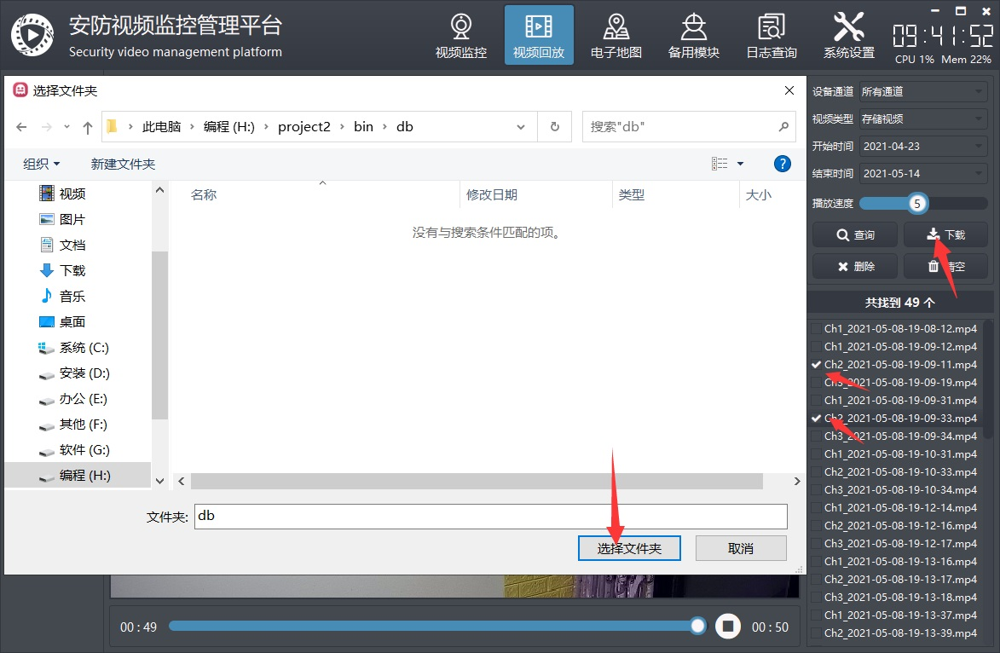
3.2 远程回放
远程回放模块是用来通过sdk的形式回放远程NVR设备上的录像文件，这个暂未实现，本系统主要是为了兼容性和通用性，通过具体sdk形式调用的处理都没有做，破坏了移植性，到了其他平台就没法使用了，本系统sdk使用这块默认用的海康sdk作为示例。

3.3 设备播放
设备播放模块主要是通过rtsp视频流的形式来拉取实时视频和回放视频，现在越来越多的NVR支持直接通过取流的形式来拉取实时视频流和回放视频，这样使用起来很方便，当然在拉取视频流的时候要传入用户信息，防止非法获取，现在越来越多的应用场景需要通过NVR来调取回放视频，传统的SDK的方式非常累厂家太多，而国标的形式太繁琐复杂，于是rtsp形式的最简单的方式应运而生，目前支持的厂家也越来越多，每个厂家格式的规则不一样，可以自行咨询厂家的规则，本程序默认实现了海康、大华和深广的规则。

3.4 图片回放
3.4.1 图片查询
 选择设备通道和时间范围，单击查询按钮，会将查询到的图片序列按照日期的形式作为一行添加到列表结果中，双击可以自动播放，可以调节播放速度。
选择设备通道和时间范围，单击查询按钮，会将查询到的图片序列按照日期的形式作为一行添加到列表结果中，双击可以自动播放，可以调节播放速度。
3.4.2 存储规则
- 默认存储主目录 image_normal。
- 主目录下按照日期目录存放 比如 2021-04-07 2021-04-08。
- 日期目录下是单个的图片文件 比如 Ch1_2021-04-07-14-08-11-222.jpg。
- 拓展功能可以存储对应的数据文件比如警情文字和图片文件一个目录 名称一样 拓展名可以是 txt。

3.4.3 图片下载
 将勾选的图片序列文件，导出到选择的目录。
将勾选的图片序列文件，导出到选择的目录。
3.4.4 导出报告
图文混排，可以自定义信息，封装好的类，传入图片队列，图片自适应等比例缩放显示，超过自动分页。

3.5 视频上传
 视频上传功能主要用来将本地存储的视频文件（也可以是其他文件），通过网络传输（默认TCP）上传到其他地方比如服务器，服务器上要运行接收文件的程序，这样就相当于远程备份视频文件的功能，视频文件可以勾选需要上传哪一些。
视频上传功能主要用来将本地存储的视频文件（也可以是其他文件），通过网络传输（默认TCP）上传到其他地方比如服务器，服务器上要运行接收文件的程序，这样就相当于远程备份视频文件的功能，视频文件可以勾选需要上传哪一些。
3.5.1 本地设置
本地只需要在视频监控系统客户端上切换到视频上传页面，然后选择要查询的日期范围，单击查询，会将视频文件查询出来显示在左边的表格中，可以勾选要上传的视频文件，右侧填写好服务器的IP和端口（默认6000），单击上传按钮，会多线程的形式上传文件。
3.5.2 远程设置
远程需要放置文件传输工具，该工具完整源码如果购买了视频监控系统，可以赠送，该工具同时具备了发送端和接收端的功能，配套视频监控系统使用的是接收端，视频监控系统作为发送端，填好监听端口后，单击监听按钮，一旦有连接文件上传，会自动显示对应的接收进度，文件名称以上传的文件名为准。
3.5.3 文件加密
默认文件传输过程采用了加密机制，意味着传输的数据是加密后的数据，接收到以后根据设置的秘钥进行解密重新生成文件，防止文件传输过程中被拦截，可自定义加密规则。
3.5.4 功能特点
- 多线程收发文件，支持加密传输。
- 接收端支持监听端口接收文件和主动连接服务器接收文件两种方式。
- 按照 文件开始符+文件大小+文件内容+文件结束符 逐个分包接收。
- 可对接收的加密过的文件包进行解密输出。
- 如果采用连接服务器方式接收文件可指定请求文件。
- 接收端请求文件的形式可以作为通用的程序升级方案。
- 进度条实时更新收发文件的进度。
- 发送端可设置每个包最很大小即切片分包数量。
- 发送端可对文件的每个包进行加密传输。
- 发送端支持对包进行合并发送。
- 可指定目录对客户端发来的请求文件进行搜索。
- 每个功能独立的一个类，接口清晰友好，使用方便。
- 支持任意Qt版本、任意系统、任意编译器。
4 电子地图
电子地图有多个子模块，分别不同的功能，在每个模块上，双击对应的摄像机，都可以弹出实时视频预览画面，支持多个画面同时打开，每个摄像机都一个画面窗体。
- 图片地图：摄像机分布在平面图上。
- 离线地图：默认采用百度离线瓦片地图，本地使用。
- 在线地图：默认采用百度地图，需要联网使用。
- 路径规划：指定起始点和终点经纬度坐标，查询最优路径并绘制路线，提取路线坐标集合，动态模拟轨迹，比如机器人和飞机轨迹。
4.1 双击预览

4.2 图片地图
- 图片地图的功能是为了方便直接提供图片文件，然后摄像机点位可直接拖动，更精确定位的场景，图片可以提供鸟瞰图这种，看起来更直观大气，有3D的感觉。
- 图片文件存放在可执行文件下的map文件夹下，如果需要增加或者删除，可以直接文件操作即可，比如复制新的图片文件到这个目录下即可。
- 具体摄像机对应哪张图片，可以在摄像机管理中设置，对应字段为地图，直接下拉选择对应的地图即可，默认选择无，就是该摄像机不属于任何地图。

4.3 离线地图
功能和在线地图完全一致，唯一区别就是地图是离线的，不需要联网。离线的地图需要自己准备好，可以网上通过瓦片地图下载器来下载需要的地方的离线地图，一般离线地图比较大，他是一张张图片，所以建议离线地图只下载自己需要的即可，比如某个县的地图，而不是所有的，所有的起码有几十GB。

使用说明
- 默认系统提供的是上海市的地图。
- 下载地址在下面文章中，会自动更新地址。 https://blog.csdn.net/feiyangqingyun/article/details/104005917
- 请下载同目录下的bin_map_tiles.zip压缩包，解压到config目录下，最后config文件夹下会多出来tiles tiles_hybrid两个文件夹。
4.4 在线地图
在摄像机管理的界面，可以添加经纬度信息，这样就可以在地图上显示对应的摄像机点位信息，如果发现位置不对，可以在右侧先选择摄像机设备，然后鼠标单击新的位置，右侧目标经度、目标纬度信息会自动更新，然后再单击更新经纬度值则会更新当前下拉选择的设备的经纬度信息，也可以在摄像机管理界面手动填入进行修改。 在右侧还有模拟运动轨迹、开始显示轨迹两个按钮，有可能后期还会增加其他功能，是为了演示如何在地图上实现地图的相关功能，开始显示轨迹采用的定时器来生成轨迹点数据，动态模拟运动轨迹，可以单击显示设备位置按钮还原最初的设备点位图。

功能特点
- 同时支持在线地图和离线地图两种模式。
- 同时支持webkit内核、webengine内核、IE内核。
- 支持设置多个标注点，信息包括名称、地址、经纬度。
- 可设置地图是否可单击、拖动、鼠标滚轮缩放。
- 可设置协议版本、秘钥、主题样式、中心坐标、中心城市、地理编码位置等。
- 可设置地图缩放比例和级别，缩略图、比例尺、路况信息等控件的可见。
- 支持地图交互，比如鼠标按下获取对应位置的经纬度。
- 支持查询路线，可设置起点位置、终点位置、路线模式、路线方式、路线方案（最少时间、最少换乘、最少步行、不乘地铁、最短距离、避开高速）。
- 可显示点线面工具，可直接在地图上划线、点、矩形、圆形等。
- 可设置行政区划，指定某个城市区域绘制图层，在线地图自动输出行政区划边界点集合到js文件给离线地图使用。
- 可静态或者动态添加多个覆盖物。支持点、折线、多边形、矩形、圆形、弧线、点聚合等。
- 函数接口友好和统一，使用简单方便，就一个类。
- 支持js动态交互添加点、删除点、清空点、重置点，不需要刷新页面。
- 支持任意Qt版本、任意系统、任意编译器。
4.5 路径规划
基本步骤
- 输入起点坐标和终点坐标，也可以勾选地图选点，开启后直接在左侧的地图界面鼠标按下自动识别对应的经纬度坐标填入，单选框勾选的起点则填入起点坐标输入框中，勾选的终点就填入终点坐标输入框中。
- 选择路线方式，可选公交、驾车、步行、骑行等方式，默认选择步行。
- 选择路线方案，可选最少时间、最短距离、避开高速等。
- 输入关键点数，一般查询返回的路径的经纬度坐标点数非常密集，可能非常多，我们需要根据输入的关键点数来过滤，比如输入30，表示从所有经纬度数据中平均提取出来30个数据就行。点数合计，查询路线后自动返回所有经纬度坐标的数据个数。
- 单击查询路线，自动返回对应路径的所有经纬度坐标。
- 单击帅选数据，按照填入的关键点数进行数据帅选，在下方可以看到原始数据和最终数据，选中某个数据，自动在左侧生成点预览对应的位置。
- 单击模拟轨迹，会启动定时器，从第一个数据点开始，自动移动设备比如机器人、飞行器等，查看整个轨迹点路径是否正确。


 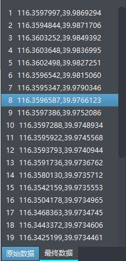
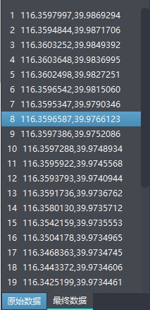
5 日志查询
5.1 本地日志
 本地日志存放的是本系统的操作日志，比如用户登录退出、记录删除、设备报警等操作，都会有对应的记录存放的数据库，可以在这里选择时间段和日志类型进行查询。查询后的日志记录可以翻页查看，还可以直接支持指定页码跳转，（此翻页组件超级牛逼，外观和功能分离，自动计算页码切换导航，具体可参见对应类的头文件功能描述），每页显示多少条记录在系统设置中可以设置。
本地日志存放的是本系统的操作日志，比如用户登录退出、记录删除、设备报警等操作，都会有对应的记录存放的数据库，可以在这里选择时间段和日志类型进行查询。查询后的日志记录可以翻页查看，还可以直接支持指定页码跳转，（此翻页组件超级牛逼，外观和功能分离，自动计算页码切换导航，具体可参见对应类的头文件功能描述），每页显示多少条记录在系统设置中可以设置。
5.1.1 查询记录
可以按照多条件进行查询记录，比如选择设备通道，选择日志的类型（用户操作、运行日志、设备日志、报警日志）、时间范围。 在查询记录的时候，如果勾选了前面的复选框则表示启用该选择条件进行查询，没有勾选，就算后面选择了类型等，也是按照where 1=1 条件查询的。 查询后的记录会自动分页显示，而不是一次性显示，可以单击底部的翻页按钮进行翻页查看记录，可以快速切换到第一页、末一页、上一页、下一页、显示的页码切换、指定的页码切换。
5.1.2 打印记录
 单击打印按钮，会将当前查询的记录打印出来，自动分页。打印前会弹出打印预览对话框，可以最后在这里调整边距、纸张等设置参数。
单击打印按钮，会将当前查询的记录打印出来，自动分页。打印前会弹出打印预览对话框，可以最后在这里调整边距、纸张等设置参数。
5.1.3 导出记录到xls
单击XLS按钮可以将表格中的内容导出到excel表格，独创的excel导出数据算法，极速导出，支持任意系统，无依赖。

5.1.4 导出记录到pdf

5.1.5 删除记录
 单击删除按钮，会弹出时间范围选择对话框，选择要删除的记录的开始时间和结束时间，单击确定，会将该时间段内的记录全部删除，结束时间必须大于开始时间。
单击删除按钮，会弹出时间范围选择对话框，选择要删除的记录的开始时间和结束时间，单击确定，会将该时间段内的记录全部删除，结束时间必须大于开始时间。
5.1.6 清空记录
单击清空按钮会先弹出询问框提示是否需要清空数据，单击确定则自动清空所有的记录，清空后不能恢复。
 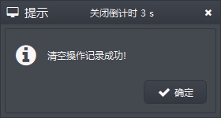
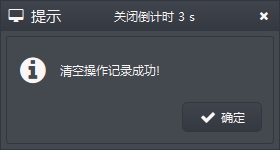
5.2 设备日志
 设备日志是指直接通过sdk协议，远程从NVR设备上拉取日志记录到本地显示，其余功能和本地日志一致，此功能未实现。
设备日志是指直接通过sdk协议，远程从NVR设备上拉取日志记录到本地显示，其余功能和本地日志一致，此功能未实现。
6 系统设置
6.1 系统设置
系统设置主界面如下图：

6.1.1 基本设置
 基本设置中有部分参数的切换会自动重启应用。
参数说明
基本设置中有部分参数的切换会自动重启应用。
参数说明
- 开机运行：开启以后自动随着系统启动运行，默认开启。
- 自动登录：开启以后会自动以最后登录的用户信息登录到系统，默认关闭。
- 记住密码：开启以后会自动填入最后登录的用户信息到登录窗体，默认关闭。
- 中文标题：软件左上角标题栏的中文标题，改动立即应用。
- 英文标题：软件左上角标题栏的英文标题，改动立即应用。
- 版权所有：当前软件版权所有的公司，目前没有显示在哪里，备用。
- 全屏模式：开启以后，最大化显示自动全屏显示而不是最大化显示，默认关闭。
- 全屏适应：开启了以后会自动采用上移一个像素的办法解决opengl的BUG。
- 软件图标：自动从logo文件夹读取，可以自行选择对应的logo文件。
- 界面样式：系统自带17套皮肤，可以在这里自动换肤，默认视频黑。
- 工作模式：默认视频监控，可选机器人监控、无人机监控等。
- 导航样式：用于选择顶部导航栏和左侧导航栏的样式，上侧+左侧表示顶部导航栏上侧样式（图标在上面，文字在下面），左侧导航栏左侧样式（图标在左侧，文字在右侧）。
- 弹框时间：右下角弹出提示信息自动关闭时间，0秒表示常驻不关闭。
- 报警声音：0表示不启用，其余表示报警后播放的声音次数。
- 鼠标隐藏：主界面多久鼠标没有操作过会自动隐藏鼠标指针，一般在全屏轮询的时候需要设置，效果会更好。
- 自动全屏：经过多久以后鼠标没有操作过自动全屏，0表示不启用。
- 备用开关：后面做其他功能使用。
- 图文警情：图文警情模块消息行数，0表示自动计算填满，不产生滚动条。
- 窗口消息：窗口消息模块消息行数，0表示自动计算填满，不产生滚动条。
- 透明度值：停靠窗体的透明度值，可调节，动态应用。
6.1.2 视频参数
 参数说明
参数说明
- 保存视频：开启以后打开视频自动存储录像文件，目录在可执行文件video_normal。
- 存储间隔：录像文件按照什么规则存储视频，0分钟表示只存储到单个文件。
- 视频边框：视频控件的边框的宽度，值越大边框越粗。
- 报警视频：开启以后保存报警视频到可执行文件video_alarm，暂未启用。
- 硬件加速：当前视频内核采用何种硬件加速方式，默认none表示不启用硬件加速（常用的所有qsv、dxva2、d3d11va，建议用dxva2或者d3d11va，具体根据电脑是否支持定）。
- 通信方式：视频流采用何种通信方式，默认TCP（可靠连接，不会丢包，缺点就是慢），可选UDP（不可靠连接，容易丢包，但是速度快）。
- 视频回调：是否采用回调的形式来解码显示视频，比如vlc内核和海康内核都支持回调。
- 码流类型：双击摄像机以什么码流地址加载实时视频，默认子码流。
- 解码方式：ffmpeg内核有用，可选速度优先、质量优先、均衡处理。
- 播放音频：开启以后可以播放声音，有时候不需要声音的时候可以关闭，节省资源。
- 图片拉伸：默认开启，通道画面按照填充拉伸显示，不开启的话则按照等比例缩放。
- 打开间隔：软件启动后挨个加载打开视频的间隔，默认1秒钟。
- 重连间隔：软件多久检测一次摄像机是否掉线，默认10秒钟。
- 事件订阅：开启以后会用onvif的机制订阅报警事件。
- 自动校时：开启后摄像机上线立即同步本地时间到摄像机。
6.1.3 数据库设置
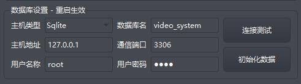 参数说明
- 默认提供了视频监控系统的数据库脚本文件（拓展名sql结尾的文件）。
- 单击初始化数据按钮可以对整个数据库进行新建和重置，相当于恢复出厂。
- 系统支持多种数据库，默认sqlite（Qt内置的数据库，无需安装），可选mysql、postgresql、oracle、人大金仓等。
- 具体还需要对应Qt版本有数据库插件支持，没有插件支持可以自行编译对应缺失的插件比如mysql，也可选直接通过万能的ODBC来连接。
- 除了sqlite数据库外，其余数据库都需要输入数据库名称、主机地址、通信端口、用户名称、用户密码信息，输入好以后可以单击连接测试按钮测试下是否正常。
- 默认提供的是mysql的动态库libmysql.dll，需要放到可执行文件同一目录，严格区分32位和64位的动态库。
xxxxxxxxxx111//数据库类型枚举2enum DbType {3 DbType_ODBC = 0, //odbc数据源4 DbType_Sqlite = 1, //sqlite数据库5 DbType_MySql = 2, //mysql数据库6 DbType_PostgreSQL = 3, //postgresql数据库7 DbType_SqlServer = 4, //sqlserver数据库8 DbType_Oracle = 5, //oracle数据库9 DbType_KingBase = 6, //人大金仓数据库10 DbType_Other = 255 //其他数据库11};6.1.4 地图配置
 参数说明
参数说明
- 地图秘钥：对应百度地图的秘钥，默认内置的作者的秘钥，很多软件系统都用的这个秘钥，用户数较多，可能有并发限制，为了不影响体验，强烈建议改成自己的，可以自行去官网申请，免费。
- 地图中心：默认地图的中心点坐标。
- 地图级别：默认地图打开以后的缩放级别。
6.1.5 功能激活
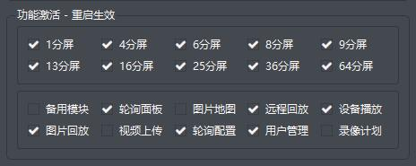 参数说明 勾选则表示启用，可以对各种分屏进行功能激活，需要重启应用，没有勾选的，不会显示对应的菜单切换和分屏快捷按钮。多个子界面模块也可以选择显示或者隐藏，以便将不需要的模块隐藏掉，碍眼。
6.1.6 颜色配置
 参数说明
可以设置不同的场景不同的颜色，比如正常的系统消息显示白色，异常消息红色。
参数说明
可以设置不同的场景不同的颜色，比如正常的系统消息显示白色，异常消息红色。
6.1.7 串口配置
 参数说明
系统中可能用到了多个串口通信，可以在这里选择对应的串口号和波特率。
参数说明
系统中可能用到了多个串口通信，可以在这里选择对应的串口号和波特率。
6.1.8 网络配置
 参数说明
系统中可能用到多种网络通信，比如软件主动连接服务器，需要填写TCP地址和端口，也可能软件作为服务端，填写TCP或者UDP监听端口。
参数说明
系统中可能用到多种网络通信，比如软件主动连接服务器，需要填写TCP地址和端口，也可能软件作为服务端，填写TCP或者UDP监听端口。
6.2 录像机管理
本系统所用的录像机信息，并没有实际的作用，也就是不一定要填写实际的录像机信息，留作备用后期使用，目前仅仅是作为生成设备的树状列表使用（类似于区域），如果一个录像机都没有填写，则会自动生成一个默认的录像机信息。
 字段说明
字段说明
- 设备编号：录像机的编号，唯一字段。
- 设备名称：录像机的别名，建议不要重复。
- 设备类型：录像机的厂家类型，可选海康、大华、宇视、其他等。
- 设备地址：录像机的IP地址。
- 用户姓名：录像机的登录用户名称。
- 用户密码：录像机的登录用户密码。
- 启用状态：录像机设备是否启用。
- 安装位置：录像机的安装位置。
6.2.1 录像机添加
单击添加按钮，会自动规则生成默认的信息，直接表格中修改即可，修改好以后单击保存按钮保存所有的信息。
6.2.2 录像机删除
如果要删除某个设备，需要先选中该设备，然后单击删除按钮，删除后会自动保存。
6.2.3 录像机清空
单击清空按钮会对整个表进行清空操作，清空后数据不能恢复，慎用。
6.2.4 录像机信息导入
单击导入按钮，可以选择之前导出的csv格式的文件导入数据。
6.2.5 录像机信息导出
单击导出按钮，将表格数据导出到csv格式的文件，用户可以打开文件编辑，然后再次导入，这样可以作为简易的备份机制使用，也可将繁琐的基础数据录入交给小姑娘去做。
6.2.6 录像机信息打印
单击打印按钮可以将表格中的内容打印出来，打印前会弹出打印预览界面，可以自行做边距的调整等，可以查看等待打印的内容，翻页切换。
6.2.7 导出到Excel
单击导出按钮可以将表格中的内容导出到excel表格，独创的excel导出数据算法，极速导出，支持任意系统，无依赖。


6.3 摄像机管理
摄像机表信息，是整个系统中最核心的表，这里管理的所有的摄像机信息，并不是所有的字段都显示出来了，比如onvif地址、云台地址等都是隐藏的，因为无需添加更改，需要搜索自动添加的。
 字段说明
字段说明
- 设备编号：摄像机的唯一编号。
- 设备名称：摄像机的别名，建议不要重复。
- 录 像 机：该摄像机对应所属的录像机，随便选择一个就行。
- 设备厂家：摄像机的厂家类型，通过onvif搜索会自动有厂家信息，没有的就选择其他。
- 主码流地址：摄像机的主码流地址。
- 子码流地址：摄像机的子码流地址。
- 经 纬 度：摄像机的经纬度信息，用来地图上显示位置，中间用 | 隔开。
- 背景地图：摄像机对应的平面地图，下拉选择。
- 用户姓名：摄像机登录的用户名称。
- 用户密码：摄像机登录的用户密码。
- 启用状态：摄像机是否启用。
- 安装位置：摄像机的安装位置。
6.3.1 摄像机添加
单击添加按钮，会自动规则生成默认的信息，直接表格中修改即可，修改好以后单击保存按钮保存所有的信息。
6.3.2 摄像机删除
如果要删除某个设备，需要先选中该设备，然后单击删除按钮，删除后会自动保存。
6.3.3 摄像机清空
单击清空按钮会对整个表进行清空操作，清空后数据不能恢复，慎用。
6.3.4 摄像机信息导入
单击导入按钮，可以选择之前导出的csv格式的文件导入数据。
6.3.5 摄像机信息导出
单击导出按钮，将表格数据导出到csv格式的文件，用户可以打开文件编辑，然后再次导入，这样可以作为简易的备份机制使用，也可将繁琐的基础数据录入交给小姑娘去做。
6.3.6 摄像机信息打印
单击打印按钮可以将表格中的内容打印出来，打印前会弹出打印预览界面，可以自行做边距的调整等，可以查看等待打印的内容，翻页切换。
6.3.7 导出到Excel
单击导出按钮可以将表格中的内容导出到excel表格，独创的excel导出数据算法，极速导出，支持任意系统，无依赖。


6.3.8 设备搜索
 如果摄像机已经添加过，则搜索出来的摄像机信息行背后颜色突出显示并且不可选中。
如果摄像机已经添加过，则搜索出来的摄像机信息行背后颜色突出显示并且不可选中。
 基本步骤
基本步骤
- 第一步：单击广播搜索按钮，搜索到的设备会显示在左侧表格中。
- 第二步：输入onvif用户名和密码，注意是onvif的用户信息，一个摄像机可能有多种用户，比如登录用户，远程用户，onvif用户，务必记得要用onvif用户信息，可参阅说明书的末尾海康大华的onvif设置。
- 第三步：单击获取所有，会自动以填写的onvif用户信息，去拉取具体摄像机的码流地址、云台地址等信息，可以拉动底部的横向滚动条查看具体是否获取到信息。
- 第四步：单击添加选中按钮将所有勾选了复选框的设备添加到摄像机信息表中。
特别说明
- 如果没有码流地址，是添加不了的，必须有码流地址才能添加。
- 一般一个项目上的摄像机都是同一个品牌的，onvif用户信息也都一样，所以单击获取所有可以把所有摄像机的信息获取到。
- 可以填入不同的onvif用户信息，单击获取当前按钮来指定摄像机获取onvif信息。
- 如果有些设备不支持广播，只支持单播（比如不是同一网段的设备，但是路由器设置过，是通的），则指定设备右侧填写好IP地址或者onvif地址，再单击单播搜索即可。
- 一台电脑可能多个网卡和IP网段，可以选择不同的网卡进行搜索。
- 录像机信息和摄像机信息的更改，是自动应用的，无需重启。
- 搜索后的设备信息自动添加到表格中，按照IP地址升序排序，支持跨网段排序，自动将IP地址转为quint32整型进行排序，而不是取IP地址末尾。
 参数说明
参数说明
- 用户姓名：onvif用户的名称，默认admin。
- 用户密码：onvif用户的密码，默认admin。
- 选择网卡：选择对应电脑的网卡IP，可能有多个网段，onvif只能同一个网段。
- 指定设备：对指定的IP地址或者onvif地址进行onvif搜索。
- 过滤设备：对返回的onvif地址进行过滤，一种厂家的类别的设备地址格式一样。
- 搜索间隔：默认onvif搜索指令有好几种，会重发几次，指定发送的间隔。
- 搜索策略：默认自动清空，每次都重新添加搜索到的设备，如果选择设备累加则多次搜索后只会将新增加的设备加到设备列表，这个非常有用，在很多设备现场建议用设备累加策略而不是自动清空，因为onvif协议是udp协议，在大量数据的情况下会导致丢包，需要多次搜索，取最终的设备集合。
- 广播搜索：广播搜索指定网卡的所有onvif设备。
- 单播搜索：对指定设备进行单个搜索。
- 获取所有：按照当前填入的用户姓名和密码，填充到onvif请求鉴权中对所有搜索的设备进行媒体地址的获取、云台控制地址的获取、视频流地址的获取等。
- 获取当前：很多时候并不是所有的设备onvif用户信息一样，对于不一样的，可以先选中设备所在行，然后输入不同的用户信息，单击获取当前即可，会对当前选中的设备重新获取onvif信息。
- 添加选中：搜索到的设备前面都有个复选框，单击添加选中以后会对所有打钩的设备批量添加到摄像机信息表中，会自动过滤已经添加过的设备以及没有视频流地址的设备。
- 添加当前：对应获取当前，一般来说单个添加用户信息不一样的设备，因为批量添加不了，他的信息需要单独获取。
6.4 轮询配置
 轮询点管理界面，上侧是轮询点信息表，可以直接添加、删除、修改、清空轮询点信息，下侧是摄像机信息表，会自动加载，当摄像机信息变动后，这里会自动加载最新的数据。右下角是批量生成轮询点和轮询分组管理。
轮询点管理界面，上侧是轮询点信息表，可以直接添加、删除、修改、清空轮询点信息，下侧是摄像机信息表，会自动加载，当摄像机信息变动后，这里会自动加载最新的数据。右下角是批量生成轮询点和轮询分组管理。
6.4.1 轮询点添加
轮询点的添加有三种方式：手动添加、单个添加、批量添加。允许重复添加，没有过滤机制。
- 手动添加：单击添加按钮，在右侧轮询信息表格中自动生成默认轮询点信息，手动输入和修改信息然后单击保存按钮即可。
- 单个添加：左侧摄像机信息表中选中一行，单击添加当前按钮，会将选中的摄像机信息添加到右侧轮询点信息中，自动保存。
- 批量添加：单击添加所有按钮，会将所有摄像机信息添加到右侧轮询点信息中，自动保存。
6.4.2 轮询点删除
如果要删除某个轮询点，需要先选中该轮询点，然后单击删除按钮，删除后会自动保存。
6.4.3 轮询点清空
单击清空按钮会对整个表进行清空操作，清空后数据不能恢复，慎用。
6.4.4 轮询点信息导入
单击导入按钮，可以选择之前导出的csv格式的文件导入数据。
6.4.5 轮询点信息导出
单击导出按钮，将表格数据导出到csv格式的文件，用户可以打开文件编辑，然后再次导入，这样可以作为简易的备份机制使用，也可将繁琐的基础数据录入交给小姑娘去做。
6.4.5 轮询点信息打印
单击打印按钮可以将表格中的内容打印出来，打印前会弹出打印预览界面，可以自行做边距的调整等，可以查看等待打印的内容，翻页切换。
6.4.7 导出到Excel
单击导出按钮可以将表格中的内容导出到excel表格，独创的excel导出数据算法，极速导出，支持任意系统，无依赖。
6.4.8 参数设置
 参数说明
参数说明
- 自动轮询：开启以后，启动软件后自动轮询。
- 轮询间隔：画面切换的间隔，单位秒，建议时间长一点。
- 轮询画面：轮询的画面数，可选1画面、4画面、9画面、16画面。
- 码流类型：默认子码流，超过4画面建议子码流。
6.4.9 批量生成
 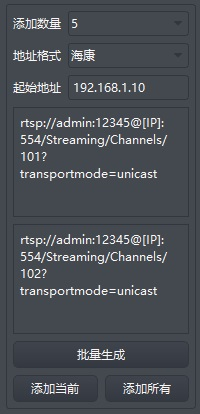
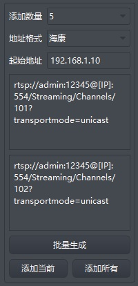  轮询表信息可以通过已添加的摄像机信息表选中添加，也可以自定义规则批量生成视频流地址添加，这种应用场景非常多，比如现场是某一种品牌的摄像机，视频流格式固定，只需要设置好主码流子码流的视频流格式，便可批量生成。
参数说明
轮询表信息可以通过已添加的摄像机信息表选中添加，也可以自定义规则批量生成视频流地址添加，这种应用场景非常多，比如现场是某一种品牌的摄像机，视频流格式固定，只需要设置好主码流子码流的视频流格式，便可批量生成。
参数说明
- 生成数量： 需要批量生成多少个。
- 起始地址：如果选择的是文件，则填写对应的数字，其他则填写IP地址。
- 地址格式：可选各种厂家类型，还可选择文件，这个用于测试软件非常有用。
6.4.10 分组设置
 参数说明
可添加、删除、修改、清空轮询分组名称，相当于轮询预案。
参数说明
可添加、删除、修改、清空轮询分组名称，相当于轮询预案。
6.5 用户管理
用户管理是后面增加的一个模块，用于设置不同的用户不同的类型+权限，可以细分到每个模块的权限，勾选表示具有该权限，内置了7种权限选择，后期还可以在此基础上增加其他权限等。

6.5.1 用户添加
单击添加按钮，会自动规则生成默认的信息，直接表格中修改即可，修改好以后单击保存按钮保存所有的信息。
6.5.2 用户删除
如果要删除某个用户，需要先选中该用户，然后单击删除按钮，删除后会自动保存。不允许删除内置的admin用户。
6.5.3 用户清空
单击清空按钮会对整个表进行清空操作，清空后数据不能恢复，慎用。
6.5.4 用户信息导入
单击导入按钮，可以选择之前导出的csv格式的文件导入数据。
6.5.5 用户信息导出
单击导出按钮，将表格数据导出到csv格式的文件，用户可以打开文件编辑，然后再次导入，这样可以作为简易的备份机制使用，也可将繁琐的基础数据录入交给小姑娘去做。
6.5.6 用户信息打印
单击打印按钮可以将表格中的内容打印出来，打印前会弹出打印预览界面，可以自行做边距的调整等，可以查看等待打印的内容，翻页切换。

6.5.7 导出到Excel
单击导出按钮可以将表格中的内容导出到excel表格，独创的excel导出数据算法，极速导出，支持任意系统，无依赖。

6.5.8 权限验证
假设设置了用户没有退出系统和电子地图的权限，则关闭系统的时候会弹出错误信息提示当前用户没有权限。


7 简易使用步骤
7.1 添加摄像机
- 切换到系统设置-》摄像机管理，单击添加，输入码流地址，单击保存。
- 在不知道主码流和子码流是啥的情况下，两个地方填一样的，其余默认即可。
- 本地文件格式：g:/mp4/1.mp4
- USB摄像机：默认ffmpeg内核为 video=USB2.0 PC CAMERA（具体要看设备名） 如果是vlc内核则为 dshow://:dshow-vdev='Default'
- 摄像机视频流：直接填入rtsp、rtmp、http的视频流地址，该地址可以先用vlc播放器或者potplay等播放器先试试是否能正常播放，不能的话就别添加了，添加了也没卵用，别费力气了。
7.2 视频播放
切换到视频监控主界面，左侧设备列表，双击摄像机，自动通道播放，双击录像机则整个录像机下面的摄像机全部加载。
7.3 云台控制
云台控制的前提是摄像机是通过onvif搜索的形式添加的，不然没有云台地址没法进行云台控制，当然也必须要求摄像机带云台，不带云台的摄像机是不能进行云台控制的。 先选中要进行云台控制的摄像机通道，边缘高亮，然后再单击右侧的云台控件，可以上下左右等移动，变倍和光圈没有用。
7.4 自动校时
在系统设置中开启自动校时后，设备自动上线后会自动将本地时间同步到设备。
7.5 事件订阅
在系统设置中开启事件订阅后，一旦接收到设备的报警信息会显示到主界面左下角的信息栏，右下角弹出对应的报警信息。 摄像机要响应事件订阅，具体详细设置说明参见说明书其他说明中的摄像机报警输入设置。
7.6 图片参数

- 用onvif也可以对摄像机的明亮度、对比度、饱和度进行设置。
- 先选中对应的通道，然后右下角这里找到设置的区域。
- 单击获取参数，会自动将对应摄像机的明亮度、对比度、饱和度值读回来，显示在对应文本框和滑块中。
- 如果需要设置图片参数，先移动滑块到需要的值，然后单击设置参数按钮即可。
- 设置完以后会立即应用，传过来的视频流就能看到效果。
- 下面还有两个按钮可以手动重启设备以及校时。后期可能还会增加一些按钮。
8 内核模块说明
本系统支持多种内核，方便不同的用户选择，适应不同的应用场景，默认提供的是ffmpeg内核和vlc内核，其他内核需要额外购买或者定制，支持定制内核。 每个内核实现的功能不一定完全一致，可仔细查看后面的每个内核的功能特点说明。
8.1 模块-onvif
8.1.1 效果图

8.1.2 功能介绍
- 广播搜索设备，支持IPC和NVR，依次返回，可选择不同的网卡IP。
- 依次获取Onvif地址、Media地址、Profile文件、Rtsp地址。
- 可对指定的Profile获取视频流Rtsp地址，比如主码流子码流地址。
- 可对每个设备设置Onvif用户信息，用于认证获取详细信息。
- 可实时预览摄像机图像。
- 支持云台控制，可上下左右调节云台，支持绝对移动和相对移动，可放到和缩小图像远近。
- 支持Qt4和Qt5任意Qt版本，亲测Qt4.7.0到Qt5.12.4。
- 支持任意编译器，亲测mingw、msvc、gcc、clang。
- 支持任意操作系统，亲测xp、win7、win10、linux、嵌入式linux、树莓派全志H3等。
- 支持任意Onvif摄像机和NVR，亲测海康、大华、宇视、华为、海思芯片内核等，可定制开发。
- 支持对指定IP地址进行单播搜索，比如跨网段情况下非常有用。
- 纯Qt编写，超级小巧轻量，总共约2000行代码，不依赖任何第三方的库和组件，跨平台。
- 封装好了通用的数据发送和接收解析的函数，可以非常方便的自行拓展其他Onvif处理比如修改IP等。
- 工具上提供了收发数据文本框，显示收发的数据，方便查看和分析。
- 支持所有Onvif设备，代码工整，接口友好，直接引入pri即可使用。
8.1.3 云台说明
- x、y、z 范围都在0-1之间。
- x为负数，表示左转，x为正数，表示右转。
- y为负数，表示下转，y为正数，表示上转。
- z为正数，表示拉近，z为负数，表示拉远。
- 通过x和y的组合，来实现云台的控制。
- 通过z的组合，来实现焦距控制。
8.1.4 主要功能
- 搜索设备，获取设备的信息比如厂家、型号等。
- 获取设备的多个配置文件信息profile。
- 获取对应配置文件的视频流地址rtsp，以及分辨率等参数。
- 云台控制，上下左右移动，焦距放大缩小，相对和绝对移动。
- 获取预置位信息，触发预置位。
- 订阅事件，接收设备的各种消息尤其是报警事件比如IO口的报警。
- 抓图，获取设备当前的图片。
- 获取、创建、删除用户信息。
- 获取和设备网络配置信息比如IP地址等。
- 获取和设置NTP时间同步。
- 获取和设置设备时间。
- 重启设备。
8.1.5 处理流程
- 绑定组播IP（239.255.255.250）和端口（3702），发送固定的xml格式的数据搜索设备。
- 接收到的xml格式的数据解析，得到设备的Onvif地址。
- 对Onvif地址发送对应的数据，收到数据取出对应的节点数据。
- 请求Onvif地址获取Media地址和Ptz地址，Media地址用来获取详细的配置文件，Ptz地址用来云台控制。
- ptz控制是对Ptz地址发送对应的数据即可。
- 设置了用户认证的需要组织用户token信息一块发送，每次都需要作鉴权处理。
- 接收到的数据不是标准的xml数据，没法按照正常的节点解析来处理，只能用QXmlQuery来做。
- 每个厂家设备返回的数据未必完全一致，基本上都不一致，需要进行模糊查找节点值。
- 特意采用底层协议解析，因为soap太臃肿函数名称太另类，特意做的轻量级的。
- 两个必备工具，Onvif Device Manager 和 Onvif Device Test Tool。
8.2 内核-ffmpeg
8.2.1 效果图

8.2.2 功能介绍
- 多线程实时播放视频流+本地视频+USB摄像头等。
- 支持windows+linux+mac，支持ffmpeg3和ffmpeg4，支持32位和64位。
- 多线程显示图像，不卡主界面。
- 自动重连网络摄像头。
- 可设置边框大小即偏移量和边框颜色。
- 可设置是否绘制OSD标签即标签文本或图片和标签位置。
- 可设置两种OSD位置和风格。
- 可设置是否保存到文件以及文件名。
- 可直接拖曳文件到ffmpegwidget控件播放。
- 支持h265视频流+rtmp等常见视频流。
- 可暂停播放和继续播放。
- 支持存储单个视频文件和定时存储视频文件。
- 自定义顶部悬浮条，发送单击信号通知，可设置是否启用。
- 可设置画面拉伸填充或者等比例填充。
- 可设置解码是速度优先、质量优先、均衡处理。
- 可对视频进行截图（原始图片）和截屏。
- 录像文件存储支持裸流和MP4文件。
- 音视频完美同步，采用外部时钟同步策略。
- 支持seek定位播放位置。
- 支持在线网络音视频文件比如http开头mp4、mp3结尾的。
- 可选句柄模式（GPU绘制）、回调模式（QPainter绘制）。
- GPU绘制模式同时支持拉伸和等比例绘制。
- 支持qsv、dxva2、d3d11va等硬解码。
- 硬解码和GPU组合，超低CPU占用，支持64路视频。
- 支持安卓和嵌入式linux，交叉编译即可。
8.3 内核-vlc
8.3.1 效果图

8.3.2 功能介绍
- 多线程实时播放视频流+本地视频+USB摄像头等。
- 支持windows+linux+mac，支持vlc2和vlc3，支持32位和64位。
- 多线程显示图像，不卡主界面。
- 自动重连网络摄像头。
- 可设置边框大小即偏移量和边框颜色。
- 可设置是否绘制OSD标签即标签文本或图片和标签位置。
- 可设置两种OSD位置和风格。
- 可设置是否保存到文件以及文件名。
- 可直接拖曳文件到vlcwidget控件播放。
- 支持h265视频流+rtmp等常见视频流。
- 可暂停播放和继续播放。
- 支持回调模式和句柄两种模式。
- 支持线程读取进度等信息和事件回调两种处理模式。
- 自动将当前播放位置和音量大小是否静音以信号发出去。
- 提供接口设置播放位置和音量及设置静音。
- 支持存储单个视频文件和定时存储视频文件。
- 自定义顶部悬浮条，发送单击信号通知，可设置是否启用。
- 支持auto、any、dxva2、d3d11va等硬解码。
8.4 内核-mpv
不自带，需要额外购买此模块。
8.4.1 效果图

8.4.2 功能介绍
- 多线程实时播放视频流+本地视频等。
- 支持windows+linux+mac。
- 多线程显示图像，不卡主界面。
- 自动重连网络摄像头。
- 可设置是否保存到文件以及文件名。
- 可直接拖曳文件到mpvwidget控件播放。
- 支持h265视频流+rtmp等常见视频流。
- 可暂停播放和继续播放。
- 支持存储单个视频文件和定时存储视频文件。
- 自定义顶部悬浮条，发送单击信号通知，可设置是否启用。
- 可设置画面拉伸填充或者等比例填充。
- 可对视频进行截图（原始图片）和截屏。
- 录像文件存储MP4文件。
- 支持qsv、dxva2、d3d11va等硬解码。
8.5 内核-海康sdk
不自带，需要额外购买此模块。
8.5.1 效果图

8.5.2 功能介绍
- 支持播放视频流和本地MP4文件。
- 支持句柄和回调两种模式。
- 多线程显示图像，不卡主界面。
- 自动重连网络摄像头。
- 可设置边框大小即偏移量和边框颜色。
- 可设置是否绘制OSD标签即标签文本或图片和标签位置。
- 可设置两种OSD位置和风格。
- 可设置是否保存到文件以及文件名。
- 可直接拖曳文件到haikangwidget控件播放。
- 支持h264/h265视频流。
- 可暂停播放和继续播放。
- 支持存储单个视频文件和定时存储视频文件。
- 自定义顶部悬浮条，发送单击信号通知，可设置是否启用。
- 可设置画面拉伸填充或者等比例填充。
- 可设置解码是速度优先、质量优先、均衡处理。
- 可对视频进行截图（原始图片）和截屏（视频窗体）。
- 录像文件存储为MP4文件。
- 支持焦距控制、云台控制。
- 可定制功能。
下面没有列出功能介绍的是暂时没有实现的内核
8.6 内核-萤石sdk
8.7 内核-大华sdk
8.8 内核-宇视sdk
8.9 内核-easyplayer
8.10 内核-大牛直播
8.11 内核-qtav
9 主界面模块说明
本系统主界面采用QMainWindow停靠窗体模式设计，这样可以自定义各种各样的子模块停靠悬浮等，不同的工作模式可以对应不同的模块，甚至可以拓展成不同的用户权限对应不同的主界面模块。所有子模块都是new出来的，支持任意多个。
9.0 主界面
视频监控系统支持多种工作模式，不同的工作模式可以有不同的主界面、悬停模块、布局方案。互相不影响。悬停模块可以有透明度，更具科幻感。
9.0.1 视频监控-普通模式

9.0.2 视频监控-全屏模式

9.0.3 机器人监控-普通模式

9.0.4 机器人监控-全屏模式

9.0.5 无人机监控-普通模式

9.0.6 无人机监控-全屏模式

9.1 设备列表
 设备列表通过读取录像机信息（生成父节点，相当于区域，录像机信息本身在整个系统中目前就一个作为设备列表的区域信息功能，用户可以自行拓展作为其他用途。）、摄像机信息，自动生成设备列表，每个摄像机都对应一个主码流和子码流，支持各种视频流、本地视频文件、USB摄像机等。
设备列表通过读取录像机信息（生成父节点，相当于区域，录像机信息本身在整个系统中目前就一个作为设备列表的区域信息功能，用户可以自行拓展作为其他用途。）、摄像机信息，自动生成设备列表，每个摄像机都对应一个主码流和子码流，支持各种视频流、本地视频文件、USB摄像机等。
9.2 窗口信息
 窗口信息负责显示一些打印信息，比如串口是否打开成功，摄像机是否异常，各种报警日志等，可以在系统设置中设置不同的文字颜色，窗口信息的信息条数自动计算应用，保证最大可能的适应高度。
窗口信息负责显示一些打印信息，比如串口是否打开成功，摄像机是否异常，各种报警日志等，可以在系统设置中设置不同的文字颜色，窗口信息的信息条数自动计算应用，保证最大可能的适应高度。
9.3 图文警情
 图文警情模块负责以图文的形式显示对应的警情或者提示信息，有时间、内容、图片，双击对应图片可以放大查看具体图片，为了方便演示如何使用，在此模块增加了右键菜单，可以添加消息、删除消息、清空消息。
图文警情模块负责以图文的形式显示对应的警情或者提示信息，有时间、内容、图片，双击对应图片可以放大查看具体图片，为了方便演示如何使用，在此模块增加了右键菜单，可以添加消息、删除消息、清空消息。
9.4 云台控制
 云台控制模块，可以对选中的通道的摄像机（ONVIF协议），进行云台控制，可以控制球机的上下左右等各个方位的移动，还可以调节变倍步长，至于变焦和光圈，目前onvif协议中没看到对应的协议支持，没有实现。
云台移动总共有3种策略：绝对移动、相对移动、连续移动，本系统都支持三种策略，默认采用的连续移动，这也是大部分应用场景需要的，按下对应的方位进行移动，松开立即停止移动，非常人性化。
云台控制模块，可以对选中的通道的摄像机（ONVIF协议），进行云台控制，可以控制球机的上下左右等各个方位的移动，还可以调节变倍步长，至于变焦和光圈，目前onvif协议中没看到对应的协议支持，没有实现。
云台移动总共有3种策略：绝对移动、相对移动、连续移动，本系统都支持三种策略，默认采用的连续移动，这也是大部分应用场景需要的，按下对应的方位进行移动，松开立即停止移动，非常人性化。
9.5 设备控制
 设备控制模块，可以对选中的通道的摄像机（ONVIF协议），进行获取参数、设置参数、手动校时、重启设备、抓拍图片、模拟报警等操作，可以对摄像机的明亮度、对比度、饱和度进行设置。后期还可能不断增加新的功能。
设备控制模块，可以对选中的通道的摄像机（ONVIF协议），进行获取参数、设置参数、手动校时、重启设备、抓拍图片、模拟报警等操作，可以对摄像机的明亮度、对比度、饱和度进行设置。后期还可能不断增加新的功能。
9.6 预置位置
 预置位功能，只对带有预置位的球机才起作用，有云台的球机未必有预置位，要仔细查看清楚，不清楚可以询问厂家或者查阅手册，在本模块中，可以获取预置位、添加预置位、调用预置位、删除预置位、调用起始位、设置起始位、开始巡航、停止巡航等。
获取预置位以后，会将获取到的预置位集合(一般有255个甚至更多)显示到列表中，前面是编号token，后面是预置位的别名name，别名可以是中文的，可以通过添加预置位的时候设置中文的名称。添加、调用、删除预置位之前要先从预置位列表中选中一个预置位。
自动巡航目前采用的策略是通过勾选查询回来的预置位信息，勾选，然后定时器每隔一段时间调用一次对应的预置位来实现，每次正在执行哪个预置位会在列表中自动选中该预置位，后期如果有更好的处理方法会自动更新改进代码。
预置位功能，只对带有预置位的球机才起作用，有云台的球机未必有预置位，要仔细查看清楚，不清楚可以询问厂家或者查阅手册，在本模块中，可以获取预置位、添加预置位、调用预置位、删除预置位、调用起始位、设置起始位、开始巡航、停止巡航等。
获取预置位以后，会将获取到的预置位集合(一般有255个甚至更多)显示到列表中，前面是编号token，后面是预置位的别名name，别名可以是中文的，可以通过添加预置位的时候设置中文的名称。添加、调用、删除预置位之前要先从预置位列表中选中一个预置位。
自动巡航目前采用的策略是通过勾选查询回来的预置位信息，勾选，然后定时器每隔一段时间调用一次对应的预置位来实现，每次正在执行哪个预置位会在列表中自动选中该预置位，后期如果有更好的处理方法会自动更新改进代码。
9.7 巡航设置
目前放在预置位中，后期可能会有改动。
9.8 悬浮地图
悬浮地图子模块，使用的百度地图，支持在线和离线，用于显示对于设备的位置，支持鼠标直接拖动和缩放。
 具体和飞行轨迹模块类似。
具体和飞行轨迹模块类似。
9.9 飞行轨迹
专为无人机打造的模块，也可以作为机器人移动模块，通过传入一个经纬度值，实时更新设备的位置和绘制轨迹，模块已经内置了接口进行处理，支持不同设备不同的轨迹颜色（这个功能好）。

9.10 飞行监控
 目前放置的是6个飞行套装控件（代码中有8个可以自行添加修改），默认定时器模拟数据，可以自行传入真实的数据会自动显示值。
目前放置的是6个飞行套装控件（代码中有8个可以自行添加修改），默认定时器模拟数据，可以自行传入真实的数据会自动显示值。
9.11 数据调试
 数据调试模块，用于显示通信串口的数据，自定义不同颜色显示，可以勾选过滤某个串口进行数据查看，也可以选择所有数据，还可以勾选暂停显示复选框用来暂停打印显示信息。
数据调试模块，用于显示通信串口的数据，自定义不同颜色显示，可以勾选过滤某个串口进行数据查看，也可以选择所有数据，还可以勾选暂停显示复选框用来暂停打印显示信息。
9.12 运动仿真
此模块留给用户自行填入内容。
9.13 图像增强
此模块留给用户自行填入内容。
9.14 网页浏览
 网页浏览模块，用于传入一个网页地址，打开对应的网页进行浏览，可用于网页展示信息，支持多个，可以自行增加，代码中演示了一个。
网页浏览模块，用于传入一个网页地址，打开对应的网页进行浏览，可用于网页展示信息，支持多个，可以自行增加，代码中演示了一个。
10 各系统运行图
10.1 windows-mingw

10.2 windows-msvc

10.3 linux-ubuntu
 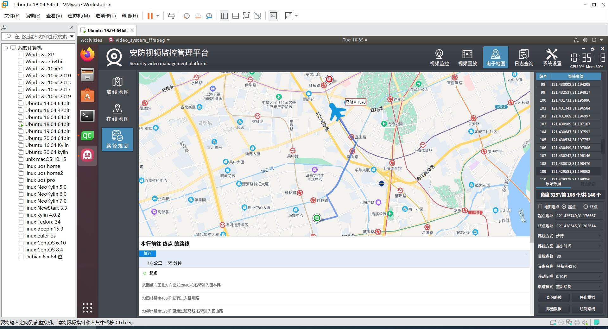
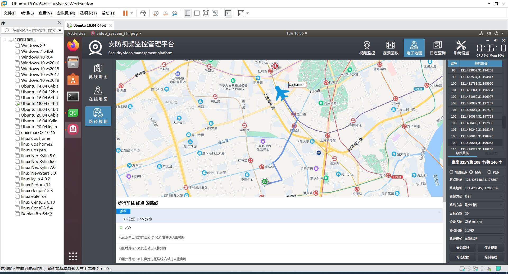
10.4 linux-deepin
 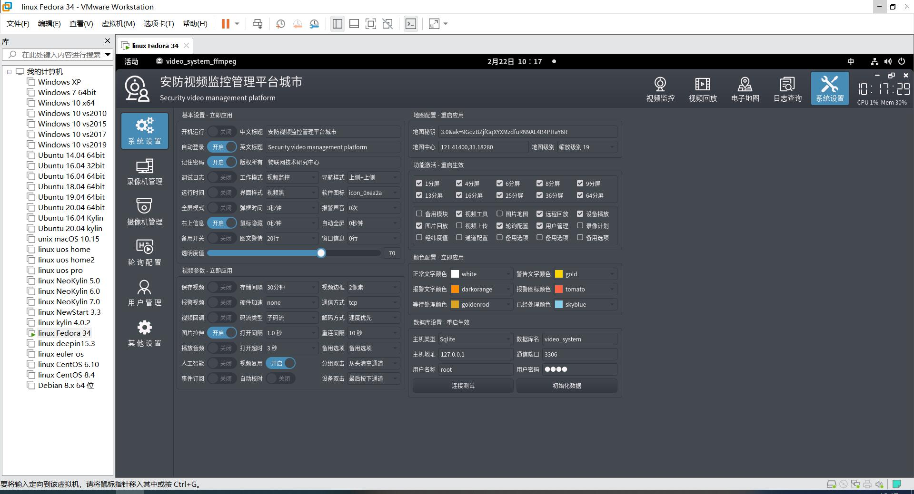
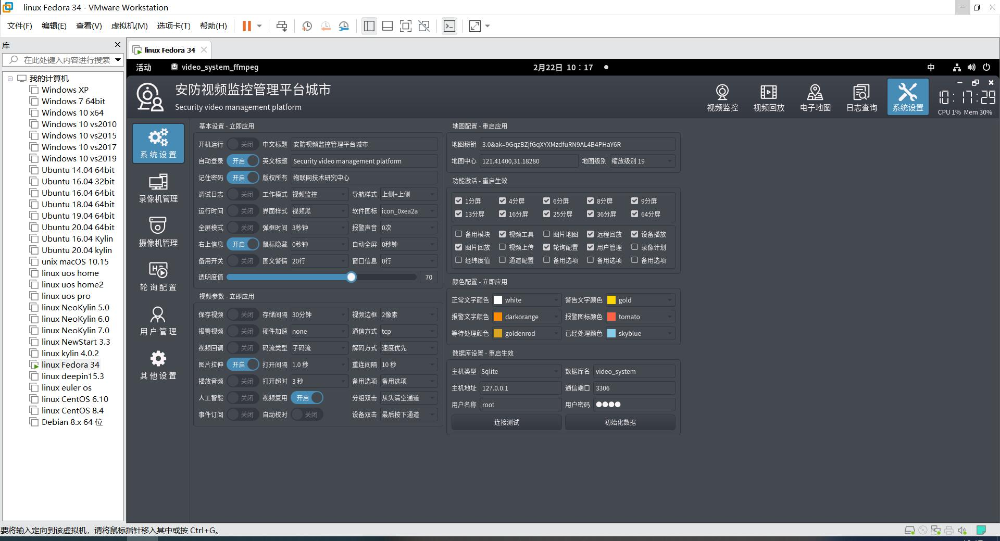
10.5 linux-centeros

10.6 linux-uos


10.7 linux-kylin
 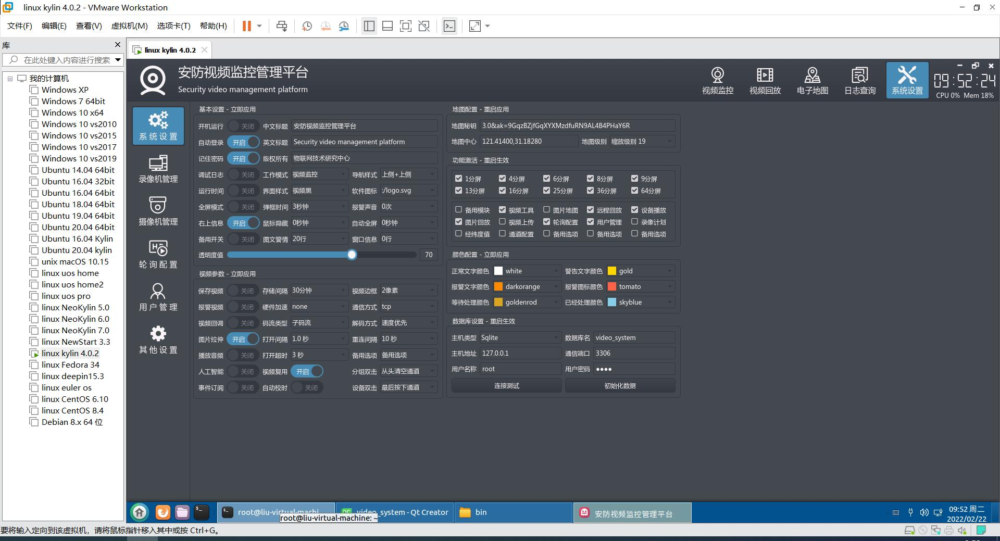
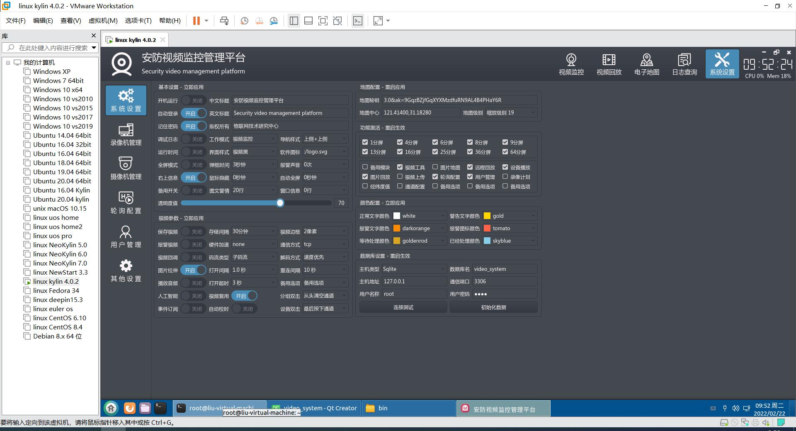
10.8 unix-mac
 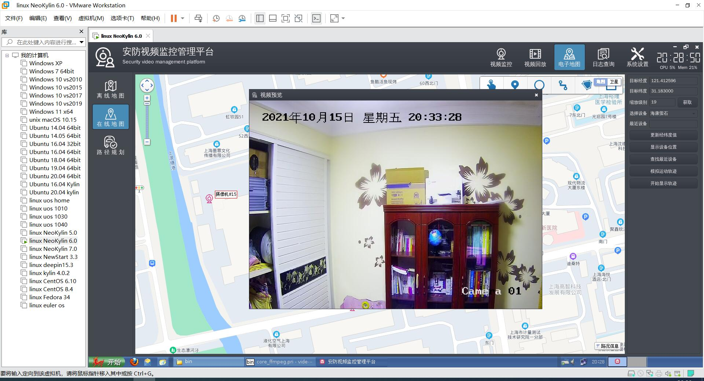
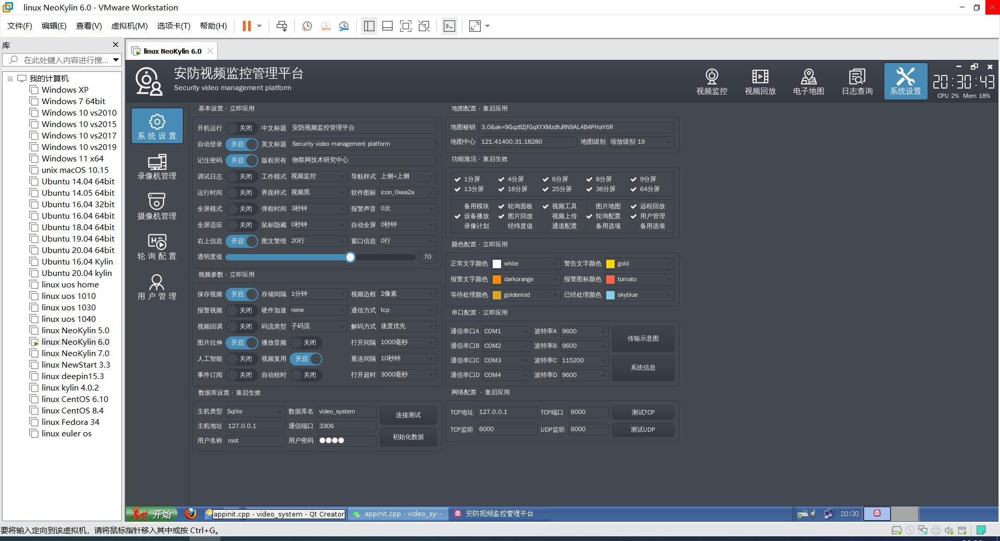
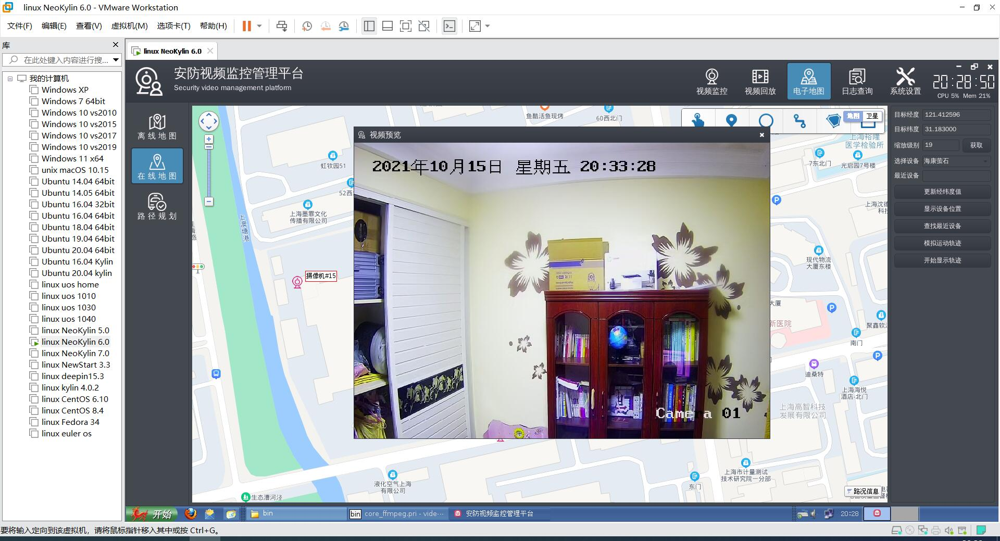
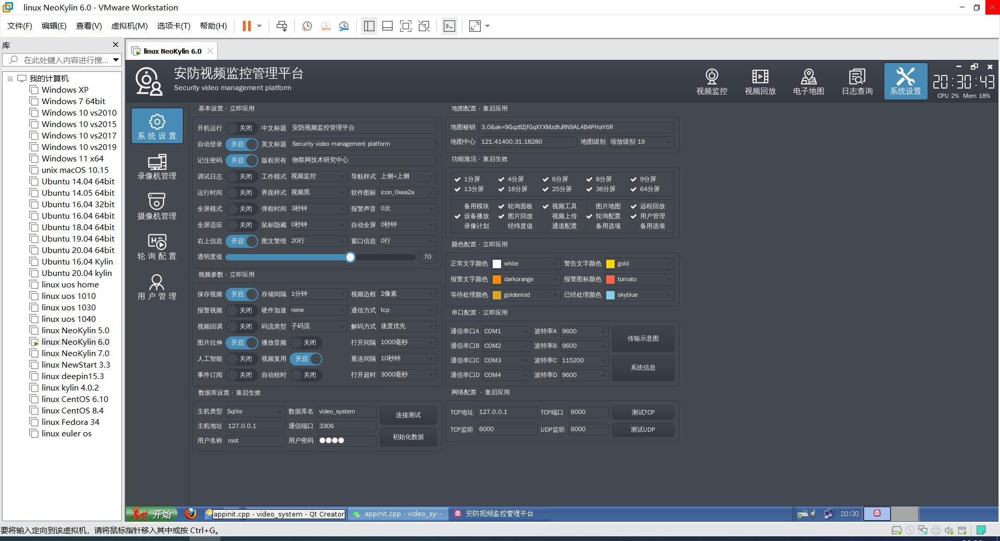
11 程序框架说明
备注：下面的截图和说明未必是最新的，但是大部分是一致的，整体的框架不会改变，可能会有新增加子模块和代码，或者部分类文件有调整或者删除，具体以最新的代码为准。
11.1 整体代码结构
 本系统采用模块化的设备，有用到第三方开源类库比如串口通信qextserialport，全部放在3rd下面，有用到很多自己封装完善的通用类库比如ffmpeg视频监控，全部放在core下面，设备通信和辅助处理全部放在class下面，所有界面全部放在ui下面，相当于一个个小的组件合起来，最终形成了整个监控系统的完整代码。
本系统采用模块化的设备，有用到第三方开源类库比如串口通信qextserialport，全部放在3rd下面，有用到很多自己封装完善的通用类库比如ffmpeg视频监控，全部放在core下面，设备通信和辅助处理全部放在class下面，所有界面全部放在ui下面，相当于一个个小的组件合起来，最终形成了整个监控系统的完整代码。
11.2 主模块说明
| 名称 | 说明 |
|---|---|
| 3rd | 一些第三方开源的类库，比如串口通信qextserialport。 |
| class | 存放系统初始化、样式控制、自定义控件、设备通信等。 |
| core | 本人一直持续更新完善的通用的类库，比如ffmpeg视频监控。 |
| ui | 所有的界面都分门别类放在这里。 |
11.3 子模块说明
11.3.1 第三方类库
 这里放的全部是第三方开源的轮子，感谢开源、感谢github、gitee等开源社区。
这里放的全部是第三方开源的轮子，感谢开源、感谢github、gitee等开源社区。
| 名称 | 说明 |
|---|---|
| 3rd_qextserialport | 第三方串口通信qextserialport，这个类比较稳定可靠，经过了几十个项目持续数十年运行的考验，不用Qt自带的串口类。 |
具体代码不做过多说明。
11.3.2 通信及辅助类
 这里放的都是一些系统初始化、设备通信相关的类。
这里放的都是一些系统初始化、设备通信相关的类。
| 名称 | 说明 |
|---|---|
| api | 存放数据库表映射成对应的全局队列数据、通用的辅助函数类。 |
| app | 全局配置参数管理类、秘钥管理类、通用函数。 |
| device | 设备通信管理，比如机器人通信、无人机通信、人工智能处理等。 |
| flight | 飞行套件控件集合。 |
| usercontrol | 当前系统的自定义控件全部放在这里，其中包括云台仪表盘、通用视频监控等控件。 |
11.3.2.1 模块-api
| 名称 | 说明 |
|---|---|
| dbdata | 将数据库表映射到全局变量数据队列，比如将摄像机表ipcinfo转成QStringList存放一行行数据，这样在程序中运算比较速度极快，直接内存比较，不用每次都去读取数据库。 |
| dbquery | 所有的数据库查询插入更新等操作都在这里，比如查询摄像机表、插入日志记录等。 |
| savelog | 日志钩子类，将系统中所有的打印信息转为日志存储或者输出到网络等，本系统目前没有用到，后期可以开启用来打印输出日志信息。 |
| saveruntime | 保存运行时间类，用来存储系统启动后每隔一段时间就输出一条记录用来记录启动后软件运行了多久，方便分析问题。 |
11.3.2.2 模块-app
| 名称 | 说明 |
|---|---|
| appconfig | 配置参数类，整个系统的配置参数存放在ini文件中，跨平台，所有参数都对应一个变量，读取配置参数的时候将值赋值给变量，写入的时候将变量值写入到配置文件。 |
| appdata | 全局变量类，系统中无可避免需要一些全局变量方便处理，都放在此类，比如版本号、录像机类型、摄像机类型、当前用户信息、地图宽度高度、左侧右侧顶部底部宽高等。 |
| appevent | 全局事件转发类，系统越复杂信号需要传递的层级越多，所以需要一个全局事件转发类，用来中转这些事件，这样永远只需要两层就可以收到信号进行处理，而且整个系统看起来干净整洁，不会说一个信号传递到了N个地方乱七八糟，建议需要跨层级传递的信号都放在这里中转。比如软件退出信号，可能多个界面需要收到退出信号进行保存和其他处理，如果从关闭界面发出信号传递给需要的界面，那不知道要中间层层传递多少次，有了这个全局事件转发类，你只需要将事件传给appevent，需要接收事件的地方关联这个信号就行，appevent为全局单例类，整个系统唯一。通用的一些信号有软件退出、全局样式改变、主窗体变化（0-最小化 1-最大化 2-恢复 3-关闭 4-移动 5-尺寸变化）等。 |
| appfun | 通用辅助函数处理，比如系统重启、导入导出数据、校验权限等。 |
| appinit | 程序初始化类，在main函数中，会先执行这个初始化的类，比如初始化皮肤、字体、数据库、样式等操作，这些都是要优先在窗体加载前执行的，执行完毕以后再打开窗体主界面。 |
| appkey | 秘钥管理类，指定校验秘钥文件，可设置运行时间、设备数量等限制，支持根据硬件指纹特征生成机器码文件等。 |
| appnav | 菜单导航管理类，用来控制和显示顶部导航栏、左侧导航栏的样式。很多子界面需要用到，所以封装成一个专门管理这个的类。 |
| appstyle | 全局样式管理类，整个系统的样式全部放在这里，一般加载流程是先读取样式表文件，然后将本系统独特的样式（比如开关按钮、视频监控、云台仪表盘）内容追加到后面，最后统一设置全局样式，在main函数中加载，和appinit类一样放在最前面执行。 |
11.3.2.3 模块-device
| 名称 | 说明 |
|---|---|
| devicehelper | 整个系统设备管理辅助类，比如插入窗口消息、加载设备列表、加载图片地图、加载设备按钮、初始化视频控件等。 |
| devicemap | 设备图片地图管理类，相当于一次性加载所有图片到内存，当要切换或者显示的时候，直接从内存取出来设置即可，速度极快，瞬间相应，纯粹是为了加快相应速度以及可能在图片上进行绘制增加的功能，比从文件系统读取图片文件显示快N倍。 |
| deviceonvif | 设备onvif通信管理类，比如获取当前选中通道的onvif地址、开启事件订阅、校对时间、重启设备、获取视频参数、设置视频参数、云台控制等，这里是具体的需要和摄像机信息表及视频通道关联的处理，所以不能放到通用的onvif模块中。 |
| devicerobot | 机器人串口通信管理类。 |
| devicerobot2 | 机器人串口通信管理类2，有串口数据转发功能。 |
| devicesmart | 人工智能处理类，最常见的应用就是设置一个视频控件，然后在视频控件上绘制人脸框、文字信息等，比如设备的实时运行状态。 |
| deviceuavsvideo | 无人机视频监控类，将视频控件设置过来，然后就可以将自己人工智能算法处理后的图片传过来进行绘制，类似于实时视频效果。 |
11.3.2.4 模块-flight
飞控套件集合，具体代码不做过多说明，具体可购买自定义控件大全参见演示示例。
11.3.2.5 模块-usercontrol
| 名称 | 说明 |
|---|---|
| gaugecloud | 云台仪表盘控件。 |
| squarelayout | 正方形布局控件，所有飞机控件都需要用这个布局，不然控件拉伸扁平很难看。 |
| videobox | 视频监控盒子控件，用于统一管理视频监控主界面，包括通道切换等。 |
| videoplayback | 视频回放控件。 |
| videowidget | 通用视频播放控件。 |
| widgetsound | 声音面板控件，主界面右下角单击弹出音量条。 |
11.3.3 核心通用类库
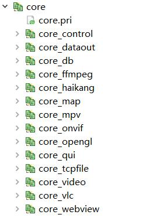 这里放的全部是个人一直持续更新完善的独创的轮子，所有的项目都公用这些轮子，用到哪个就包含哪个进来，更新只需要更新轮子代码就行。 视频监控系统包含的轮子超级丰富给力，物超所值，涵盖了数据导出模块、数据库应用、视频监控、ONVIF通信、TCP文件传输、地图应用、通用浏览器内核等。
| 名称 | 说明 |
|---|---|
| core_control | 通用自定义控件，很多系统经常用到的控件全部放在这里。 |
| core_dataout | 数据导入导出到xls/pdf和打印类库，极速、跨平台、无依赖。 |
| core_db | 数据库通用类库比如数据库线程管理、数据清理、数据采集等。 |
| core_ffmpeg | 视频监控内核ffmpeg版本，本系统默认采用的内核。 |
| core_vlc | 视频监控内核vlc版本，本系统自带该内核。 |
| core_mpv | 视频监控内核mpv版本，需要额外购买，不在视频监控系统中。 |
| core_haikang | 视频监控内核海康sdk版本，需要额外购买，不在视频监控系统中。 |
| core_map | 地图综合应用类库，百度地图（支持在线离线）和echart封装类等。 |
| core_onvif | onvif功能封装类，包括设备搜索、云台控制、设备参数设置等。 |
| core_opengl | opengl封装类，支持打开yuv/nv12文件，绘制yuv/nv12帧数据，一般搭配ffmpeg视频内核视频，直接走GPU绘制。 |
| core_qui | 通用的辅助类，包括自定义对话框，全局辅助函数，图形字体等。 |
| core_tcpfile | 文件多线程收发类，支持多个并发。 |
| core_video | 通用的视频监控管理类，封装了通用的视频控件和多通道统一管理。 |
| core_webview | 通用浏览器控件类，同时支持webkit、wenengine、miniblink三种内核，打通了所有的Qt版本。 |
11.3.3.1 模块-core_control
| 名称 | 说明 |
|---|---|
| bottomwidget | 通用底部状态栏控件，可以设置软件名称、版本号、运行时间等。 |
| colorcombobox | 颜色下拉框控件，在系统设置中有。 |
| cpumemorylabel | CPU和内存使用情况标签控件，主界面右上角显示。 |
| customtitlebar | 停靠窗体自定义标题栏控件。 |
| devicebutton | 设备按钮控件，比如图片地图模块中用到，可设置不同的图标样式和状态等，双击发出信号进行相应处理比如弹出对应视频预览等。 |
| framelesswidget | 无边框窗体管理类，无边框拖动+拉伸，主界面就用到了这个类。 |
| lcddatetime | 软件右上角显示时间的控件。 |
| panelwidget | 面板容器控件，主界面子模块表格消息，就用到此控件，用于将一堆widget放到此容器进行管理，自动形成滚动条等。 |
| switchbutton | 开关按钮控件，在系统设置中存在大量该控件。 |
| xslider | 滑动条控件，在原有滑动条基础上增加了鼠标按下立即定位等。 |
11.3.3.2 模块-core_dataout
| 名称 | 说明 |
|---|---|
| datacreat | 通用数据报表内容创建类，比如生成表格格式的html内容，然后赋值给dataprint直接打印，里面举例了图文混排的报告内容，后期会不断增加其他模板，也可以自行增加其他模板数据。 |
| datacsv | 导入导出数据，csv格式，可设置分隔符。拓展名。过滤条件等。 |
| datahead | 当前组件通用头文件。 |
| datahelper | 辅助类，比如校验规则函数，通用数据导出+打印函数。 |
| dataprint | 数据打印到pdf及纸张，支持多线程。 |
| dataxls | 数据导出到xls类，支持多线程导出。 |
11.3.3.3 模块-core_db
| 名称 | 说明 |
|---|---|
| dbcleanthread | 自动清理数据线程类。 |
| dbconnthread | 数据库通信管理线程类。 |
| dbdelegate | 自定义委托全家桶，包括复选框、下拉框、密码框、按钮等。 |
| dbhead | 当前组件通用头文件。 |
| dbhelper | 各种数据库应用函数封装，比如初始化数据库、执行sql语句等。 |
| dbhttpthread | 网络请求数据采集类。 |
| dbpage | 数据库通用翻页类。 |
| dbpagemodel | 数据库翻页类数据模型。 |
| navpage | 分页导航控件。 |
11.3.3.4 模块-core_ffmpeg
| 名称 | 说明 |
|---|---|
| ffmpegconvert | 各种转换处理函数封装。 |
| ffmpeghead | 当前组件通用头文件。 |
| ffmpeghelper | 辅助类，包括版本号，校验url地址、获取流索引等。 |
| ffmpegsync | 音视频同步类，包括了同步以及发出当前播放进度信号。 |
| ffmpegthread | 核心解码类，主要代码都在这，包括音视频的解码。 |
| ffmpegtool | 工具类，用于执行ffmpeg的命令获取结果。 |
| ffmpegwidget | 视频显示窗体类，解码后到这里显示，依赖ffmpegthread。 |
| videoffmpeg | 多通道管理类。 |
11.3.3.5 模块-core_map
| 名称 | 说明 |
|---|---|
| echartjs | echart模块中用到的json文件转js文件，获取js文件中的名字和经纬度等处理。 |
| echarts | echart封装类，可加载仪表盘、闪烁点图、迁徙图、世界地图、区域地图等，每个点可自定义颜色和提示信息等。 |
| mapbaidu | 百度地图封装类，支持在线和离线两种模式。 |
11.3.3.6 模块-core_onvif
| 名称 | 说明 |
|---|---|
| onvifbase | 基础类，用于获取设备信息、服务文件地址、能力文件地址、媒体文件地址、视频流地址等。 |
| onvifdevice | 设备类，核心处理及管理，包括设置用户信息请求onvif地址、获取设备信息、云台控制、事件订阅、抓拍图片等。 |
| onvifevent | 事件订阅具体实现类，可设置请求超时时间等。 |
| onvifhead | 当前组件通用头文件。 |
| onvifhelper | 辅助类，比如获取UUID用于请求、判断IP合法、获取本机IP地址集合、管理系统中所有onvif设备对象等。 |
| onvifmedia | 获取媒体文件具体解析类。 |
| onvifother | 其他处理类，比如系统重启、NTP校时、获取和设置网络信息、获取和设备时间、获取和设置图片参数等。 |
| onvifptz | 云台控制实现类，包括绝对移动、相对移动等。 |
| onvifquery | 数据查询类，用于将接收到的xml数据解析，并赋值字符串比如命名空间、设备地址、媒体地址、事件地址等。 |
| onvifrequest | 网络请求类，包括设置用户信息、获取用户token数据、获取xml头部数据等，通用的请求数据返回结果函数。 |
| onvifsearch | 设备搜索类，支持广播搜索、指定地址搜索，可获取设备信息集合、获取设备地址集合。 |
| onvifservices | 服务类，用于获取媒体地址、云台地址等。 |
| onvifsnap | 图片抓拍实现类，包括获取抓图地址、抓拍图片等。 |
11.3.3.7 模块-core_opengl
| 名称 | 说明 |
|---|---|
| openglhead | 当前组件通用头文件。 |
| nv12glwidget | 继承自QGLWidget的NV12格式OPENGL绘制窗体。 |
| nv12openglwidget | 继承自QOpenGLWidget的NV12格式OPENGL绘制窗体。 |
| yuvglwidget | 继承自QGLWidget的YUV格式OPENGL绘制窗体。 |
| yuvopenglwidget | 继承自QOpenGLWidget的YUV格式OPENGL绘制窗体。 |
11.3.3.8 模块-core_qui
| 名称 | 说明 |
|---|---|
| iconfont | 图形字体类，对应阿里巴巴的图形字体文件，系统中大量运用，将字体中的值转成图片显示。 |
| iconhelper | 图形字体类，对应国际开源的fontawesome图形字体。 |
| quiconfig | 存储当前组件的配置参数信息，比如全局的字体名称、字号、无边框窗体的最小化最大化关闭等图标、样式表的颜色值。 |
| quidateselect | 自定义日期范围选择对话框。 |
| quihead | 当前组件通用头文件。 |
| quihelper | 项目通用辅助类，各种常用函数的封装，比如获取当前屏幕分辨率、设置字体、设置编码、加载翻译文件、各种进制数据转换、弹出各种对话框、设置延时时间等。 |
| quiinputbox | 自定义输入框窗体，可指定不同的输入类型比如文本框、下拉框等。 |
| quimessagebox | 自定义信息消息框窗体，可设置关闭倒计时，不同的类型比如信息框、询问框、错误框等。 |
| quistyle | 当前组件通用样式设置管理类，可以指定枚举类型样式、传入样式内容设置、获取样式表文件对应的颜色值等。当前组件样式相关的处理函数都放在这里，统一管理。 |
| quitipbox | 自定义右下角信息对话框，可设置对齐方式、关闭倒计时等。 |
| quiwidget | 自定义无边框窗体，可设置标题，各种图标等。 |
11.3.3.9 模块-core_tcpfile
| 名称 | 说明 |
|---|---|
| tcpfilehead | 当前组件通用头文件。 |
| tcpfilehelper | 辅助类，包括将字节转为MB单位、初始化表格控件、生成表格行、数据加密解密、解压文件、重启系统等。 |
| tcpreceivefileserver | 接收文件服务类，管理多个接收文件线程，支持监听端口被动接收文件和主动连接服务器接收文件。 |
| tcpreceivefilethread | 接收文件线程类，根据发送的文件名、包编号、块大小、挨个接收数据最终形成文件，可设置保存文件夹等。 |
| tcpsearchfileserver | 搜索文件服务类，目前没用，用于接收请求搜索文件是否存在。 |
| tcpsendfilethread | 发送文件线程类，按照 文件开始符+文件大小+文件内容+文件结束符 逐个分包发送，可对文件的每个包进行加密传输。 |
11.3.3.10 模块-core_video
| 名称 | 说明 |
|---|---|
| commonvideomanage | 通用视频管理类，比如定时器排队打开视频、排队重连视频，可设置超时时间、打开间隔、重连间隔等。 |
| commonvideowidget | 通用视频控件类，视频监控系统支持多种内核，每种内核对应的视频控件接口一样，根据预定义关键字识别具体的视频控件类，搞个通用的视频控件类，就不用每个用到该控件的代码文件去挨个判断预定义变量生成对应的视频控件，很大减少重复冗余代码量。 |
11.3.3.11 模块-core_webview
| 名称 | 说明 |
|---|---|
| webcore.pri | 通用的根据不同的Qt版本、不同的编译器环境、不同的操作系统，加载对应的浏览器内核模块和定义不同的变量。 |
| miniblink | miniblink封装处理类。 |
| webhelper | 经纬度转换、获取小数点经纬度值等常用处理函数。 |
| webjsdata | 通用的浏览器控件和Qt程序交互数据中转类。 |
| webview | 通用浏览器控件，支持webkit、webengine、miniblink。 |
11.3.4 界面UI
 这里分门别类存放的各种功能集合的界面类，每个类都一个ui文件、一个h头文件、一个cpp实现文件，方便快速查找对应功能的界面，也方便拓展增加界面。
不仅分文件夹存放的，而且命名也尽量按照对应功能打头，比如系统设置模块中的都用frmconfig打头，外层文件夹是整齐的，内部代码也是整齐的。
这里分门别类存放的各种功能集合的界面类，每个类都一个ui文件、一个h头文件、一个cpp实现文件，方便快速查找对应功能的界面，也方便拓展增加界面。
不仅分文件夹存放的，而且命名也尽量按照对应功能打头，比如系统设置模块中的都用frmconfig打头，外层文件夹是整齐的，内部代码也是整齐的。
| 名称 | 说明 |
|---|---|
| frmconfig | 系统设置模块，包括基本设置、录像机管理、摄像机管理、轮询管理、用户管理、视频上传等。 |
| frmdata | 日志查询模块，包括本地日志、设备日志等。 |
| frmdemo | 演示demo示例，用于演示具体控件或者功能的使用，方便学习参考，比如视频图片、视频控件、视频存储都单独的使用demo。 |
| frmipc | 存放摄像机处理相关的模块，比如设备控制，云台控制、预置位、巡航设置等。之前放在frmmodule模块中，后面独立出来管理更方便。 |
| frmmain | 主界面模块，包括登录登出界面、主界面、右上角时间组件、欢迎组件等。 |
| frmmap | 地图模块，包括通用地图内核界面、图片地图、在线地图、离线地图、路径规划等。 |
| frmmodule | 停靠子窗体模块，包括停靠窗体管理核心类、设备列表、窗口信息、图文警情、设备轨迹、网页浏览等模块。将摄像机、机器人、无人机相关的模块放到了对应的模块文件夹，这里放的是系统通用的模块。 |
| frmrobot | 无人机模块，包括图像增强、飞行监控等模块。 |
| frmuavs | 无人机模块，包括图像增强、飞行监控等模块。 |
| frmvideo | 视频监控模块，所有视频监控相关的都放在这里，包括主界面的视频监控布局窗体、视频回放、远程回放、图片回放等。 |
11.3.4.1 模块-frmconfig
| 名称 | 说明 |
|---|---|
| frmconfig | 系统设置模块主界面，采用堆栈窗体形式，加载多个子界面比如摄像机管理、轮询管理等。 |
| frmconfigdb | 数据库设置，独立出来，很多系统通用。 |
| frmconfigipc | 摄像机管理，可以增加、删除、修改、清空、导入、导出、打印摄像机信息。 |
| frmconfigipcsearch | onvif设备搜索，独立出来的窗体，可以搜索局域网内的所有onvif摄像机信息，搜索完以后获取摄像机的视频流地址等，最后可以单个添加或者批量选中添加到摄像机信息表格中。 |
| frmconfignvr | 录像机管理，可以增加、删除、修改、清空、导入、导出、打印录像机信息。 |
| frmconfigpoll | 轮询管理，可以增加、删除、修改、清空、导入、导出、打印轮询点信息。可以按照设定规则批量生成轮询点信息。 |
| frmconfigpollplus | 将轮询管理中的轮询参数配置、分组管理、批量添加等独立出来的界面，方便管理和拓展。 |
| frmconfigsave | 录像计划，目前空的，等想好了怎么设计好在实现。 |
| frmconfigsystem | 系统设置，包括基本设置、视频参数、数据库设置、地图配置、功能激活、颜色配置、串口配置、网络配置等。 |
| frmconfiguser | 用户管理，可以增加、删除、修改、清空、导入、导出、打印用户信息。每个用户可以勾选不同的模块权限。 |
11.3.4.2 模块-frmdata
| 名称 | 说明 |
|---|---|
| frmdata | 日志查询模块主界面，采用堆栈窗体形式，加载多个子界面包括本地日志、设备日志等。 |
| frmdatadevice | 设备日志，通过私有协议从NVR取对应设备日志信息。 |
| frmdatauser | 本地地址，用户操作的日志信息，可查询和导出打印数据记录。 |
11.3.4.3 模块-frmdemo
| 名称 | 说明 |
|---|---|
| frmdemo | 单独的功能演示示例主窗体，加载多个子界面比如视频控件等。 |
| frmdemovideoimage | 视频图片示例，从图片文件夹读取图片集合，定时器绘制取出图片发给视频控件绘制。 |
| frmdemovideosave | 视频保存示例，演示如何对视频控件进行视频保存，可动态保存。 |
| frmdemovideowidget | 视频控件示例，演示视频控件如何使用。 |
11.3.4.4 模块-frmipc
| 名称 | 说明 |
|---|---|
| frmipccontrol | 设备控制模块，可对选中设备进行图片参数调节、NTP校时、设备重启、抓拍图片（ONVIF抓图）等。 |
| frmipcnavigate | 巡航管理模块，暂未实现，后期完善。 |
| frmipcreset | 预置位管理模块，暂未实现，后期完善。 |
| frmipcptz | 云台控制模块，可对选中的摄像机进行云台控制。 |
11.3.4.5 模块-frmmain
| 名称 | 说明 |
|---|---|
| frmlogin | 用户登录界面，三次错误关闭，下拉可选用户，内置超级密码。 |
| frmlogout | 用户退出界面，三次错误关闭，下拉可选用户，内置超级密码。 |
| frmmain | 系统主界面，采用堆栈窗体，加载各个子模块。 |
| frmmain1 | 备用模块1界面，根据参数设置决定是否启用。 |
| frmtimecpu | 右上角日期时间+CPU内存显示。 |
| frmwelcome | 右上角欢迎信息界面。 |
11.3.4.6 模块-frmmap
| 名称 | 说明 |
|---|---|
| frmmap | 地图管理主界面，采用堆栈窗体形式，加载各个子界面比如图片地图、在线地图、离线地图、路径规划等。 |
| frmmapcore | 通用百度地图内核界面，用来加载百度地图，可设置在线、离线模式，有很多个窗体用到类似功能特意封装到一个类，重复利用，比如悬浮地图、飞行轨迹、路径规划等模块都用到了此内核。 |
| frmmapdevice | 通用的设备地图界面，在线地图和离线地图界面公用这个界面，唯一区别就是设置下地图的模式是在线还是离线。 |
| frmmapimage | 图片地图界面，设备作为一个个按钮点显示在对应地图上，可以拖动，双击弹出预览实时视频。 |
| frmmaplocal | 离线地图界面，可更新经纬度值、模拟运动轨迹等。 |
| frmmapweb | 在线地图界面，可更新经纬度值、模拟运动轨迹等。 |
| frmmaproute | 路径规划界面，可查询路线得到路线的经纬度坐标集合。 |
11.3.4.7 模块-frmmodule
| 名称 | 说明 |
|---|---|
| frmdevicegps | 设备轨迹模块，对设定的设备随机模拟轨迹，也可传入经纬度坐标值自动移动并绘制轨迹线条，不同设备可以不同颜色。 |
| frmdevicetree | 设备列表模块，读取设备信息加载形成树状列表，双击或者拖动到视频监控窗体直接播放视频，提供右键菜单作为演示如何使用。 |
| frmmodule | 主界面中心部分窗体，采用QMainWindow类，中间加载的视频监控面板，其余new出来每个子模块，子模块可停靠和悬浮拖动等。不同工作模式下的各种子模块都在此加载。同时负责管理模块的显示隐藏菜单。 |
| frmmsglist | 图文警情模块，也叫消息列表模块，带有右键菜单添加、删除、清空列表中的消息，双击可以弹出大图预览。 |
| frmmsglistitem | 图文警情模块子类，都是由一个个item组成放到panelwidget面板控件中，自动形成滚动条。 |
| frmmsgtable | 窗口消息模块，也叫表格消息模块，表格形式显示打印信息，不同的内容可以不同颜色区分。 |
| frmwebview | 网页浏览模块，传入一个url地址打开对应的网页，比如打开一个3D的网页。 |
11.3.4.8 模块-frmrobot
| 名称 | 说明 |
|---|---|
| frmrobotdata | 仿真数据模块，启动机器人通信服务，接收数据解析显示。 |
| frmrobotdebug | 数据调试模块，可模拟发送轨迹数据测试解析类。 |
| frmrobotdebug2 | 新数据调试模块，打印多个串口数据，不同颜色显示。 |
| frmrobotemulate | 运动仿真模块，预留给用户实现，一般放个3D效果。 |
| frmrobotlog | 机器人实时数据模块，预留给用户实现。 |
11.3.4.9 模块-frmuavs
| 名称 | 说明 |
|---|---|
| frmuavsflight | 飞行套件控件面板，放了多个飞行仪表，默认自动模拟数据，可以传入对应数据显示。 |
| frmuavsimage | 图像增强模块，预留给用户实现。 |
| frmuavspanel | 飞行监控面板。 |
11.3.4.10 模块-frmvideo
| 名称 | 说明 |
|---|---|
| frmvideo | 视频回放模块主界面，堆栈窗体形式，加载多个子界面比如本地回放、远程回放、设备播放等。 |
| frmvideopanel | 视频监控面板，主界面中间部分，这是核心，管理多个通道，通道可移除删除，拖曳打开，拖曳交换等。 |
| frmvideopaneltool | 视频监控底部工具栏，独立出来一个类专门管理。 |
| frmvideoplayimage | 图片回放模块，按照规则查询图片目录，然后可设定播放速度进行图片序列播放。 |
| frmvideoplaylocal | 本地回放模块，查询对应通道的本地存储的视频文件，双击播放，可暂停和拖动进度条位置。 |
| frmvideoplaynvr | 远程回放模块，需要用厂家sdk去实现，从NVR回放录像。 |
| frmvideoplayweb | 设备播放模块，通过RTSP视频流的形式从远程设备取视频进行播放，支持摄像机和录像机，手动填入地址也行。 |
| frmvideopreview | 视频预览窗体，比如图片或者地图上双击设备弹出的视频预览，可以多个，关闭的时候自动释放资源。 |
| frmvideoupload | 视频上传，将本地存储的视频文件上传到服务器。 |
12 二次开发说明
12.1 开发环境搭建
12.1.1 常规通用步骤
- 第一步：安装系统，推荐用vmware虚拟机。
- 第二步：安装qt环境，可以直接用官方下载的run安装包安装，有些要求用命令行安装。
- 第三步：写个空白窗体程序测试下是否环境正常。
- 第四步：编译ffmpeg，生成对应的动态库或者静态库。
- 第五步：打开video_system.pro项目进行编译。
- 第六步：打包发布，为了发布方便，推荐用静态编译的Qt+静态编译的ffmpeg，这样打包发布很清爽，就一个可执行文件。
12.1.2 windows+mingw
12.1.3 windows+msvc
12.1.4 linux+ubuntu
12.1.5 linux+deepin
12.1.6 linux+centeros
12.1.7 linux+uos
12.1.8 linux+银河麒麟
12.2 通用模块使用
12.3 人工智能集成
13 其他说明
13.1 海康onvif设置
新版的海康的摄像机，默认onvif是关闭的，需要手动开启，开启以后记得添加onvif用户，并重启摄像机应用。提示：海康旗下的萤石目前暂时不支持onvif协议。

13.2 大华onvif设置
大华摄像机，需要在用户管理中添加onvif用户，添加好以后建议重启摄像机应用。

13.3 国际onvif工具
 工具的名字叫ONVIF Device Manager，可以自行搜索下载，此工具位国际官方工具，如果此工具搜索不到摄像机，则说明该摄像机不是真正的onvif摄像机，不是标准的摄像机，目前市面上的绝大部分网络摄像机都支持onvif。
工具的名字叫ONVIF Device Manager，可以自行搜索下载，此工具位国际官方工具，如果此工具搜索不到摄像机，则说明该摄像机不是真正的onvif摄像机，不是标准的摄像机，目前市面上的绝大部分网络摄像机都支持onvif。
13.4 报警输入设置
- 默认摄像机IO输入或者开关量输入是关闭的，需要手动开启。
- 一般都是登录到摄像机的web页面找到开关量的地方，可能描述不一样但是大致的意思差不多。
- 一般摄像机会有两组开关量输入，而且开关量报警有常开常闭两种，都需要自己手动选择。
- 如果是常开的话意味着闭合是属于报警，反之亦然。
- 找两个导线接在对应口子（详见摄像机厂家的说明书，摄像机背面板也会有对应字样标识一般叫 in）。
- 短接或者扒开，都会有反应，onvif工具都能接收到信息（前提是单击过订阅事件按钮，而且顺利返回了订阅地址才行）。
- 会收到LogicalState关键字的信息，true或者1表示报警，false或者0表示正常。
- 可能每个厂家会有所区别，需要自己拿到数据后做特殊处理，但是大部分厂家都是相似的，实在不行无非搞个contains方法判断好了。

13.5 环境使用qt+vs
打开项目：QT VS TOOLS – Open Qt Project File 选择 video_system.pro,然后等待项目加载完毕。
 由于项目中用到了ffmpeg和vlc，引用了对应的lib库，所以在用vs+qt的开发环境中，很可能报错提示 映像是不安全的 编译通不过，需要做个设置。
由于项目中用到了ffmpeg和vlc，引用了对应的lib库，所以在用vs+qt的开发环境中，很可能报错提示 映像是不安全的 编译通不过，需要做个设置。
解决方法
- 第一步：打开该项目的“属性页”对话框。
- 第二步：单击“链接器”文件夹。
- 第三步：单击“命令行”属性页。
- 第四步：将 /SAFESEH:NO 键入“附加选项”框中，然后点击应用。
- 如果设置完发现还是不行，那应该是没有一开始就设置这个步骤，你需要打开项目以后就设置好这个步骤，再去编译，建议重新解压项目来一遍。
13.6 数据库设置mysql
 如果在数据库设置中选择了mysql数据库，需要对mysql数据库做个设置，就是将编码设置成utf8，已设置可以跳过，不然很可能数据库无法正常使用。
如果在数据库设置中选择了mysql数据库，需要对mysql数据库做个设置，就是将编码设置成utf8，已设置可以跳过，不然很可能数据库无法正常使用。
13.7 查看USB设备名称
 在加载USB摄像机的时候，需要填写对应USB设备的名称，可以通过命令行和设备管理器查看对应的名称，要英文的。
在加载USB摄像机的时候，需要填写对应USB设备的名称，可以通过命令行和设备管理器查看对应的名称，要英文的。
13.8 项目代码行数
整个项目源代码行数大概30W行，其中代码13.5W行（占比45%），注释12.7W行（占比42%），空行3.5W行。分层设计注释详细。

13.9 编译ffmpeg
第一步：下载好ffmpeg，这个可以去官网http://ffmpeg.org/自行找到下载位置下载。要注意的是有些很老的嵌入式linux系统的编译器未必支持最新的ffmpeg4，建议下载3。 第二步：复制ffmpeg-3.4.5.tar.gz 到自定义文件夹下，我这里是/home/liu 第三步：解压ffmpeg，tar –zxvf ffmpeg-3.4.5.tar.gz –C /home/liu 第四步：安装编译ffmpeg依赖的包 apt-get install yasm 第五步：编译ffmpeg cd /home/liu/ffmpeg-3.4.5 如果编译静态库执行以下命令 ./configure --prefix=host --enable-static --disable-shared --disable-doc 如果编译动态库执行以下命令 ./configure --prefix=host --enable-shared --disable-static --disable-doc 如果需要编译ffplay以便直接用其打开测试，可以在参数后面加上--enable-ffplay ./configure --prefix=host --enable-shared --disable-static --disable-doc --enable-ffplay 其他常用参数 --disable-zlib --disable-xlib --enable-x11grab --disable-libxcb 可以执行./configure –help 来查看支持哪些参数，尤其是各种解码器的开关，具体可搜索。 其他参数可参见网页 https://blog.csdn.net/momo0853/article/details/78043903
make （还可以开启多线程编译加快速度 make –j4） make install 第六步：打开ffmpeg3.4.5/host目录，生成的文件都在这里，拿去用吧。